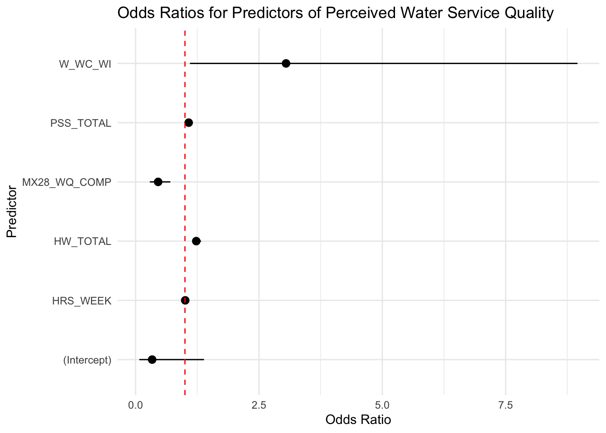
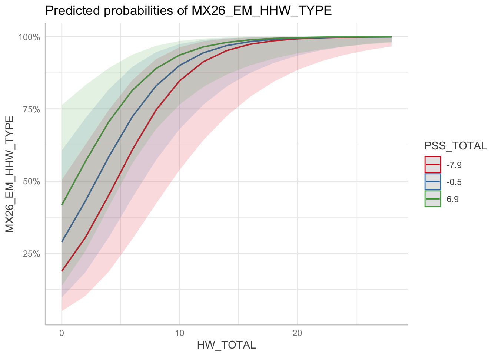

Tests
2025-03-08
Last updated: 2025-03-09
Checks: 6 1
Knit directory: QUAIL-Mex/
This reproducible R Markdown analysis was created with workflowr (version 1.7.1). The Checks tab describes the reproducibility checks that were applied when the results were created. The Past versions tab lists the development history.
The R Markdown file has unstaged changes. To know which version of
the R Markdown file created these results, you’ll want to first commit
it to the Git repo. If you’re still working on the analysis, you can
ignore this warning. When you’re finished, you can run
wflow_publish to commit the R Markdown file and build the
HTML.
Great job! The global environment was empty. Objects defined in the global environment can affect the analysis in your R Markdown file in unknown ways. For reproduciblity it’s best to always run the code in an empty environment.
The command set.seed(20241009) was run prior to running
the code in the R Markdown file. Setting a seed ensures that any results
that rely on randomness, e.g. subsampling or permutations, are
reproducible.
Great job! Recording the operating system, R version, and package versions is critical for reproducibility.
Nice! There were no cached chunks for this analysis, so you can be confident that you successfully produced the results during this run.
Great job! Using relative paths to the files within your workflowr project makes it easier to run your code on other machines.
Great! You are using Git for version control. Tracking code development and connecting the code version to the results is critical for reproducibility.
The results in this page were generated with repository version 9502a37. See the Past versions tab to see a history of the changes made to the R Markdown and HTML files.
Note that you need to be careful to ensure that all relevant files for
the analysis have been committed to Git prior to generating the results
(you can use wflow_publish or
wflow_git_commit). workflowr only checks the R Markdown
file, but you know if there are other scripts or data files that it
depends on. Below is the status of the Git repository when the results
were generated:
Ignored files:
Ignored: .DS_Store
Ignored: .RData
Ignored: .Rhistory
Ignored: .Rproj.user/
Ignored: analysis/.DS_Store
Ignored: analysis/.RData
Ignored: analysis/.Rhistory
Ignored: analysis/Hrs_by_HWISE score.png
Ignored: code/.DS_Store
Ignored: data/.DS_Store
Unstaged changes:
Modified: analysis/tests.Rmd
Note that any generated files, e.g. HTML, png, CSS, etc., are not included in this status report because it is ok for generated content to have uncommitted changes.
These are the previous versions of the repository in which changes were
made to the R Markdown (analysis/tests.Rmd) and HTML
(docs/tests.html) files. If you’ve configured a remote Git
repository (see ?wflow_git_remote), click on the hyperlinks
in the table below to view the files as they were in that past version.
| File | Version | Author | Date | Message |
|---|---|---|---|---|
| Rmd | 9502a37 | Paloma | 2025-03-09 | analyses |
| html | 9502a37 | Paloma | 2025-03-09 | analyses |
| Rmd | a8b976c | Paloma | 2025-03-08 | hrs water supply vs hwise |
| html | a8b976c | Paloma | 2025-03-08 | hrs water supply vs hwise |
# Load necessary libraries
library(dplyr)
library(ggplot2)
library(rstatix)
library(ggpubr)
library(coin)
# Load the dataset
data_path = "data"
data <- read.csv(file.path(data_path, "Cleaned_Dataset_Screening_HWISE_PSS_V4.csv"),
stringsAsFactors = FALSE,
na.strings = c("", "N/A", "NA", "pending"))# Categorize HW_TOTAL into four groups
data <- data %>%
filter(!is.na(HRS_WEEK), !is.na(HW_TOTAL)) %>%
mutate(HW_TOTAL_category = case_when(
HW_TOTAL >= 0 & HW_TOTAL <= 2 ~ "No-to-Marginal",
HW_TOTAL >= 3 & HW_TOTAL <= 11 ~ "Low",
HW_TOTAL >= 12 & HW_TOTAL <= 23 ~ "Moderate",
HW_TOTAL >= 24 & HW_TOTAL <= 36 ~ "High"
))
# Convert to factor
data$HW_TOTAL_category <- factor(data$HW_TOTAL_category, levels = c("No-to-Marginal", "Low", "Moderate", "High"))
print(table(data$HW_TOTAL_category))
No-to-Marginal Low Moderate High
72 184 93 5 # Check normality using Shapiro-Wilk test for each group
shapiro_results <- data %>%
group_by(HW_TOTAL_category) %>%
summarise(p_value = shapiro.test(HRS_WEEK)$p.value)
print(shapiro_results)# A tibble: 4 × 2
HW_TOTAL_category p_value
<fct> <dbl>
1 No-to-Marginal 1.92e-11
2 Low 2.31e-16
3 Moderate 4.29e-11
4 High 2.07e- 1# Perform Kruskal-Wallis test
kruskal_result <- kruskal.test(HRS_WEEK ~ HW_TOTAL_category, data = data)
print(kruskal_result)
Kruskal-Wallis rank sum test
data: HRS_WEEK by HW_TOTAL_category
Kruskal-Wallis chi-squared = 31.694, df = 3, p-value = 6.07e-07# Perform Wilcoxon pairwise comparisons
wilcox_results <- pairwise_wilcox_test(data, HRS_WEEK ~ HW_TOTAL_category,
p.adjust.method = "bonferroni")
# Rename columns for ggpubr compatibility
wilcox_results <- wilcox_results %>%
rename(group1 = group1, group2 = group2, p.adj = p.adj) %>%
mutate(p.adj.signif = case_when(
p.adj < 0.001 ~ "***",
p.adj < 0.01 ~ "**",
p.adj < 0.05 ~ "*",
TRUE ~ "ns"
))
# Print results
print(wilcox_results)# A tibble: 6 × 9
.y. group1 group2 n1 n2 statistic p p.adj p.adj.signif
<chr> <chr> <chr> <int> <int> <dbl> <dbl> <dbl> <chr>
1 HRS_WEEK No-to-Marg… Low 72 184 8478 2.67e-4 2 e-3 **
2 HRS_WEEK No-to-Marg… Moder… 72 93 4855 3.34e-7 2 e-6 ***
3 HRS_WEEK No-to-Marg… High 72 5 326. 8.04e-4 5 e-3 **
4 HRS_WEEK Low Moder… 184 93 9847 3.7 e-2 2.23e-1 ns
5 HRS_WEEK Low High 184 5 756 1.2 e-2 7.2 e-2 ns
6 HRS_WEEK Moderate High 93 5 369 2.7 e-2 1.64e-1 ns # Ensure positions for p-value labels
wilcox_results <- wilcox_results %>%
add_xy_position(x = "HW_TOTAL_category")
# Define y-axis positions for p-value labels (adjust as needed)
y_positions <- c(170, 180, 190, 200, 210, 220) # Adjust these manually
# Add y position column manually
wilcox_results <- wilcox_results %>%
mutate(y.position = y_positions[1:n()]) # Assign y positions
# Modify Wilcoxon results to include sample size (n1) in the annotation label
significant_wilcox_results <- wilcox_results %>%
filter(p.adj < 0.05) %>% # Remove non-significant results
mutate(label = paste0("n=", n1, "\n", p.adj.signif)) # Combine sample size and significance
# Print the significant comparisons
print(significant_wilcox_results)# A tibble: 3 × 14
.y. group1 group2 n1 n2 statistic p p.adj p.adj.signif
<chr> <chr> <chr> <int> <int> <dbl> <dbl> <dbl> <chr>
1 HRS_WEEK No-to-Margin… Low 72 184 8478 2.67e-4 2e-3 **
2 HRS_WEEK No-to-Margin… Moder… 72 93 4855 3.34e-7 2e-6 ***
3 HRS_WEEK No-to-Margin… High 72 5 326. 8.04e-4 5e-3 **
# ℹ 5 more variables: y.position <dbl>, groups <named list>, xmin <dbl>,
# xmax <dbl>, label <chr># Count the number of data points per Water insecurity level (HWISE)
summary_stats <- data %>%
group_by(HW_TOTAL_category) %>%
summarise(Count = n(), SD = sd(HRS_WEEK, na.rm = TRUE), .groups = 'drop')
hrs.w <- data$HRS_WEEK
means <- aggregate(hrs.w ~ HW_TOTAL_category, data, mean)
means$hrs.w <- round(means$hrs.w, 2)
# Create a boxplot with only significant Wilcoxon p-value annotations
ggplot(data, aes(x = HW_TOTAL_category, y = HRS_WEEK, fill = HW_TOTAL_category)) +
geom_boxplot(outlier.shape = NA, alpha = 0.7, width = 0.5) + # Boxplot
geom_jitter(aes(color = HW_TOTAL_category), size = 1.5, width = 0.2, alpha = 0.5) + # Individual points
stat_pvalue_manual(significant_wilcox_results, label = "p.adj.signif",
xmin = "xmin", xmax = "xmax", y.position = "y.position",
tip.length = 0.02, inherit.aes = FALSE) + # Annotate only significant p-values
labs(title = "Comparing hours of water supply by HWISE category (Wilcoxon Post-Hoc)",
x = "HWISE Category",
y = "Hours of Water Supply per Week",
subtitle = "Level of significance (*** for p < 0.001 ** for p < 0.01).") +
theme_minimal() +
theme(legend.position = "none") +
scale_x_discrete(labels = paste0(summary_stats$HW_TOTAL_category,
" (n=", summary_stats$Count, ")")) 
| Version | Author | Date |
|---|---|---|
| a8b976c | Paloma | 2025-03-08 |
# Load necessary packages
library(MASS) # For stepAIC
Attaching package: 'MASS'The following object is masked from 'package:rstatix':
selectThe following object is masked from 'package:dplyr':
selectlibrary(broom) # For model output formatting
library(dplyr) # For data manipulation
# Ensure it's properly coded as 0 or 1
data$MX26_EM_HHW_TYPE <- as.numeric(as.factor(data$MX26_EM_HHW_TYPE)) - 1
# Remove rows where MX26_EM_HHW_TYPE is 2
data <- data %>% filter(MX26_EM_HHW_TYPE != 2)
# Check unique values to confirm only 0 and 1 remain
table(data$MX26_EM_HHW_TYPE)
0 1
114 230 dim(data)[1] 344 48# Define dependent (outcome) variable
outcome_var <- "MX26_EM_HHW_TYPE" # Binary outcome (0 = negative, 1 = positive)
# Define independent (predictor) variables
predictors <- c("HRS_WEEK", "W_WC_WI", "MX28_WQ_COMP", "W_WS_LOC",
"SES_SC_Total", "HW_TOTAL", "D_HH_SIZE", "D_LOC_TIME",
"PSS_TOTAL", "HLTH_CPAIN_CAT", "HLTH_CDIS_CAT",
"MX9_DRINK_W", "MX10_WSTORAGE", "SEASON")
# Run univariate logistic regression for each predictor
univariate_results <- list()
aic_values <- data.frame(Predictor = character(), AIC = numeric(), stringsAsFactors = FALSE)
data <- data %>% drop_na(predictors)Warning: Using an external vector in selections was deprecated in tidyselect 1.1.0.
ℹ Please use `all_of()` or `any_of()` instead.
# Was:
data %>% select(predictors)
# Now:
data %>% select(all_of(predictors))
See <https://tidyselect.r-lib.org/reference/faq-external-vector.html>.
This warning is displayed once every 8 hours.
Call `lifecycle::last_lifecycle_warnings()` to see where this warning was
generated.dim(data)[1] 251 48for (var in predictors) {
# Build formula dynamically
formula <- as.formula(paste(outcome_var, "~", var))
# Fit univariate logistic regression model
model <- glm(formula, data = data, family = binomial)
# Store model summary
univariate_results[[var]] <- summary(model)
# Store AIC values
aic_values <- rbind(aic_values, data.frame(Predictor = var, AIC = AIC(model)))
}
univariate_results$HRS_WEEK
Call:
glm(formula = formula, family = binomial, data = data)
Coefficients:
Estimate Std. Error z value Pr(>|z|)
(Intercept) 1.376987 0.237924 5.788 7.14e-09 ***
HRS_WEEK -0.006911 0.001979 -3.493 0.000478 ***
---
Signif. codes: 0 '***' 0.001 '**' 0.01 '*' 0.05 '.' 0.1 ' ' 1
(Dispersion parameter for binomial family taken to be 1)
Null deviance: 315.71 on 250 degrees of freedom
Residual deviance: 303.13 on 249 degrees of freedom
AIC: 307.13
Number of Fisher Scoring iterations: 4
$W_WC_WI
Call:
glm(formula = formula, family = binomial, data = data)
Coefficients:
Estimate Std. Error z value Pr(>|z|)
(Intercept) -0.04763 0.21828 -0.218 0.827
W_WC_WI 1.26985 0.28586 4.442 8.9e-06 ***
---
Signif. codes: 0 '***' 0.001 '**' 0.01 '*' 0.05 '.' 0.1 ' ' 1
(Dispersion parameter for binomial family taken to be 1)
Null deviance: 315.71 on 250 degrees of freedom
Residual deviance: 295.52 on 249 degrees of freedom
AIC: 299.52
Number of Fisher Scoring iterations: 4
$MX28_WQ_COMP
Call:
glm(formula = formula, family = binomial, data = data)
Coefficients:
Estimate Std. Error z value Pr(>|z|)
(Intercept) 1.3442 0.2323 5.786 7.19e-09 ***
MX28_WQ_COMP -0.6114 0.1777 -3.440 0.000582 ***
---
Signif. codes: 0 '***' 0.001 '**' 0.01 '*' 0.05 '.' 0.1 ' ' 1
(Dispersion parameter for binomial family taken to be 1)
Null deviance: 315.71 on 250 degrees of freedom
Residual deviance: 303.36 on 249 degrees of freedom
AIC: 307.36
Number of Fisher Scoring iterations: 4
$W_WS_LOC
Call:
glm(formula = formula, family = binomial, data = data)
Coefficients:
Estimate Std. Error z value Pr(>|z|)
(Intercept) 0.4463 0.1848 2.414 0.0158 *
W_WS_LOC 0.6111 0.2739 2.231 0.0257 *
---
Signif. codes: 0 '***' 0.001 '**' 0.01 '*' 0.05 '.' 0.1 ' ' 1
(Dispersion parameter for binomial family taken to be 1)
Null deviance: 315.71 on 250 degrees of freedom
Residual deviance: 310.65 on 249 degrees of freedom
AIC: 314.65
Number of Fisher Scoring iterations: 4
$SES_SC_Total
Call:
glm(formula = formula, family = binomial, data = data)
Coefficients:
Estimate Std. Error z value Pr(>|z|)
(Intercept) 1.240625 0.416560 2.978 0.0029 **
SES_SC_Total -0.003745 0.002925 -1.280 0.2005
---
Signif. codes: 0 '***' 0.001 '**' 0.01 '*' 0.05 '.' 0.1 ' ' 1
(Dispersion parameter for binomial family taken to be 1)
Null deviance: 315.71 on 250 degrees of freedom
Residual deviance: 314.06 on 249 degrees of freedom
AIC: 318.06
Number of Fisher Scoring iterations: 4
$HW_TOTAL
Call:
glm(formula = formula, family = binomial, data = data)
Coefficients:
Estimate Std. Error z value Pr(>|z|)
(Intercept) -0.80034 0.25605 -3.126 0.00177 **
HW_TOTAL 0.21313 0.03389 6.288 3.21e-10 ***
---
Signif. codes: 0 '***' 0.001 '**' 0.01 '*' 0.05 '.' 0.1 ' ' 1
(Dispersion parameter for binomial family taken to be 1)
Null deviance: 315.71 on 250 degrees of freedom
Residual deviance: 257.93 on 249 degrees of freedom
AIC: 261.93
Number of Fisher Scoring iterations: 5
$D_HH_SIZE
Call:
glm(formula = formula, family = binomial, data = data)
Coefficients:
Estimate Std. Error z value Pr(>|z|)
(Intercept) 0.59431 0.25613 2.320 0.0203 *
D_HH_SIZE 0.02741 0.04112 0.667 0.5050
---
Signif. codes: 0 '***' 0.001 '**' 0.01 '*' 0.05 '.' 0.1 ' ' 1
(Dispersion parameter for binomial family taken to be 1)
Null deviance: 315.71 on 250 degrees of freedom
Residual deviance: 315.22 on 249 degrees of freedom
AIC: 319.22
Number of Fisher Scoring iterations: 4
$D_LOC_TIME
Call:
glm(formula = formula, family = binomial, data = data)
Coefficients:
Estimate Std. Error z value Pr(>|z|)
(Intercept) 0.875994 0.300219 2.918 0.00352 **
D_LOC_TIME -0.006001 0.011876 -0.505 0.61337
---
Signif. codes: 0 '***' 0.001 '**' 0.01 '*' 0.05 '.' 0.1 ' ' 1
(Dispersion parameter for binomial family taken to be 1)
Null deviance: 315.71 on 250 degrees of freedom
Residual deviance: 315.45 on 249 degrees of freedom
AIC: 319.45
Number of Fisher Scoring iterations: 4
$PSS_TOTAL
Call:
glm(formula = formula, family = binomial, data = data)
Coefficients:
Estimate Std. Error z value Pr(>|z|)
(Intercept) 0.82030 0.14281 5.744 9.24e-09 ***
PSS_TOTAL 0.06842 0.01975 3.464 0.000532 ***
---
Signif. codes: 0 '***' 0.001 '**' 0.01 '*' 0.05 '.' 0.1 ' ' 1
(Dispersion parameter for binomial family taken to be 1)
Null deviance: 315.71 on 250 degrees of freedom
Residual deviance: 302.82 on 249 degrees of freedom
AIC: 306.82
Number of Fisher Scoring iterations: 4
$HLTH_CPAIN_CAT
Call:
glm(formula = formula, family = binomial, data = data)
Coefficients:
Estimate Std. Error z value Pr(>|z|)
(Intercept) 0.6306 0.1524 4.139 3.49e-05 ***
HLTH_CPAIN_CAT 0.4900 0.3341 1.467 0.143
---
Signif. codes: 0 '***' 0.001 '**' 0.01 '*' 0.05 '.' 0.1 ' ' 1
(Dispersion parameter for binomial family taken to be 1)
Null deviance: 315.71 on 250 degrees of freedom
Residual deviance: 313.45 on 249 degrees of freedom
AIC: 317.45
Number of Fisher Scoring iterations: 4
$HLTH_CDIS_CAT
Call:
glm(formula = formula, family = binomial, data = data)
Coefficients:
Estimate Std. Error z value Pr(>|z|)
(Intercept) 0.7631 0.1458 5.235 1.65e-07 ***
HLTH_CDIS_CAT -0.1570 0.3873 -0.405 0.685
---
Signif. codes: 0 '***' 0.001 '**' 0.01 '*' 0.05 '.' 0.1 ' ' 1
(Dispersion parameter for binomial family taken to be 1)
Null deviance: 315.71 on 250 degrees of freedom
Residual deviance: 315.54 on 249 degrees of freedom
AIC: 319.54
Number of Fisher Scoring iterations: 4
$MX9_DRINK_W
Call:
glm(formula = formula, family = binomial, data = data)
Coefficients:
Estimate
(Intercept) 2.629e-14
MX9_DRINK_Wa) agua del suministro publico, E) Garrafon de purificadora, G) Botellas de Agua -3.224e-14
MX9_DRINK_Wd) Garrafon de marca -6.931e-01
MX9_DRINK_WD) Garrafon de marca -4.055e-01
MX9_DRINK_Wd) Garrafon de marca, E) Garrafon de purificadora -1.657e+01
MX9_DRINK_WD) Garrafon de marca, E) Garrafon de purificadora 1.792e+00
MX9_DRINK_Wd) Garrafon de marca, E) Garrafon de purificadora, G) Botellas de Agua -3.618e-14
MX9_DRINK_WD) Garrafon de marca, E) Garrafon de purificadora, G) Botellas de Agua 1.386e+00
MX9_DRINK_WD) Garrafon de marca, E) Garrafon de purificadora, G) Botellas de Agua, Garrafon por 5x a la semana 1.657e+01
MX9_DRINK_WD) Garrafon de marca, G) Botellas de Agua 1.657e+01
MX9_DRINK_WE) Garrafon de purificadora 8.377e-01
MX9_DRINK_WE) Garrafon de purificadora, G) Botellas de Agua 7.397e-01
MX9_DRINK_WE) Garrafon de purificadora, tiene filtro para usar la del suministro publico -1.657e+01
MX9_DRINK_WG) Botellas de Agua -6.931e-01
Std. Error
(Intercept) 1.000e+00
MX9_DRINK_Wa) agua del suministro publico, E) Garrafon de purificadora, G) Botellas de Agua 1.732e+00
MX9_DRINK_Wd) Garrafon de marca 1.581e+00
MX9_DRINK_WD) Garrafon de marca 1.354e+00
MX9_DRINK_Wd) Garrafon de marca, E) Garrafon de purificadora 2.400e+03
MX9_DRINK_WD) Garrafon de marca, E) Garrafon de purificadora 1.472e+00
MX9_DRINK_Wd) Garrafon de marca, E) Garrafon de purificadora, G) Botellas de Agua 1.732e+00
MX9_DRINK_WD) Garrafon de marca, E) Garrafon de purificadora, G) Botellas de Agua 1.500e+00
MX9_DRINK_WD) Garrafon de marca, E) Garrafon de purificadora, G) Botellas de Agua, Garrafon por 5x a la semana 2.400e+03
MX9_DRINK_WD) Garrafon de marca, G) Botellas de Agua 1.385e+03
MX9_DRINK_WE) Garrafon de purificadora 1.016e+00
MX9_DRINK_WE) Garrafon de purificadora, G) Botellas de Agua 1.035e+00
MX9_DRINK_WE) Garrafon de purificadora, tiene filtro para usar la del suministro publico 2.400e+03
MX9_DRINK_WG) Botellas de Agua 1.581e+00
z value
(Intercept) 0.000
MX9_DRINK_Wa) agua del suministro publico, E) Garrafon de purificadora, G) Botellas de Agua 0.000
MX9_DRINK_Wd) Garrafon de marca -0.438
MX9_DRINK_WD) Garrafon de marca -0.299
MX9_DRINK_Wd) Garrafon de marca, E) Garrafon de purificadora -0.007
MX9_DRINK_WD) Garrafon de marca, E) Garrafon de purificadora 1.217
MX9_DRINK_Wd) Garrafon de marca, E) Garrafon de purificadora, G) Botellas de Agua 0.000
MX9_DRINK_WD) Garrafon de marca, E) Garrafon de purificadora, G) Botellas de Agua 0.924
MX9_DRINK_WD) Garrafon de marca, E) Garrafon de purificadora, G) Botellas de Agua, Garrafon por 5x a la semana 0.007
MX9_DRINK_WD) Garrafon de marca, G) Botellas de Agua 0.012
MX9_DRINK_WE) Garrafon de purificadora 0.825
MX9_DRINK_WE) Garrafon de purificadora, G) Botellas de Agua 0.715
MX9_DRINK_WE) Garrafon de purificadora, tiene filtro para usar la del suministro publico -0.007
MX9_DRINK_WG) Botellas de Agua -0.438
Pr(>|z|)
(Intercept) 1.000
MX9_DRINK_Wa) agua del suministro publico, E) Garrafon de purificadora, G) Botellas de Agua 1.000
MX9_DRINK_Wd) Garrafon de marca 0.661
MX9_DRINK_WD) Garrafon de marca 0.765
MX9_DRINK_Wd) Garrafon de marca, E) Garrafon de purificadora 0.994
MX9_DRINK_WD) Garrafon de marca, E) Garrafon de purificadora 0.224
MX9_DRINK_Wd) Garrafon de marca, E) Garrafon de purificadora, G) Botellas de Agua 1.000
MX9_DRINK_WD) Garrafon de marca, E) Garrafon de purificadora, G) Botellas de Agua 0.355
MX9_DRINK_WD) Garrafon de marca, E) Garrafon de purificadora, G) Botellas de Agua, Garrafon por 5x a la semana 0.994
MX9_DRINK_WD) Garrafon de marca, G) Botellas de Agua 0.990
MX9_DRINK_WE) Garrafon de purificadora 0.410
MX9_DRINK_WE) Garrafon de purificadora, G) Botellas de Agua 0.475
MX9_DRINK_WE) Garrafon de purificadora, tiene filtro para usar la del suministro publico 0.994
MX9_DRINK_WG) Botellas de Agua 0.661
(Dispersion parameter for binomial family taken to be 1)
Null deviance: 315.71 on 250 degrees of freedom
Residual deviance: 300.54 on 237 degrees of freedom
AIC: 328.54
Number of Fisher Scoring iterations: 15
$MX10_WSTORAGE
Call:
glm(formula = formula, family = binomial, data = data)
Coefficients:
Estimate
(Intercept) -0.4055
MX10_WSTORAGEA) No se almacena, E) Cubeta con tapa 18.9715
MX10_WSTORAGEB) Tinaco 0.4055
MX10_WSTORAGEB) Tinaco, agua de lluvia: reducir consumo--> lavar patio, gastos, llavar bano 18.9715
MX10_WSTORAGEB) Tinaco, C) Cisterna 0.6817
MX10_WSTORAGEB) Tinaco, C) Cisterna, D) Tambo 2.0794
MX10_WSTORAGEB) Tinaco, C) Cisterna, D) Tambo, E) Cubeta con tapa 18.9715
MX10_WSTORAGEB) Tinaco, C) Cisterna, D) Tambo, F) Cubeta sin tapa 1.7918
MX10_WSTORAGEB) Tinaco, C) Cisterna, E) Cubeta con tapa 18.9715
MX10_WSTORAGEB) Tinaco, C) Cisterna, E) Cubeta con tapa, F) Cubeta sin tapa, pileta 18.9715
MX10_WSTORAGEB) Tinaco, C) Cisterna, F) Cubeta sin tapa 1.3863
MX10_WSTORAGEB) Tinaco, C) Cisterna, F) Cubeta sin tapa, pileta -18.1606
MX10_WSTORAGEB) Tinaco, C) Cisterna, pileta 18.9715
MX10_WSTORAGEB) Tinaco, C) Cisterna, pileta -18.1606
MX10_WSTORAGEB) Tinaco, cubeta con bolsa -18.1606
MX10_WSTORAGEB) Tinaco, D) Tambo 1.0341
MX10_WSTORAGEB) Tinaco, D) Tambo, Botes tina 18.9715
MX10_WSTORAGEB) Tinaco, D) Tambo, E) Cubeta con tapa 2.1972
MX10_WSTORAGEB) Tinaco, D) Tambo, E) Cubeta con tapa, F) Cubeta sin tapa 18.9715
MX10_WSTORAGEB) Tinaco, D) Tambo, F) Cubeta sin tapa 0.5596
MX10_WSTORAGEB) Tinaco, D) Tambo, pileta 18.9715
MX10_WSTORAGEB) Tinaco, E) Cubeta con tapa 18.9715
MX10_WSTORAGEB) Tinaco, E) Cubeta con tapa, F) Cubeta sin tapa 18.9715
MX10_WSTORAGEB) Tinaco, E) Cubeta con tapa, G) Otro, Pileta -18.1606
MX10_WSTORAGEB) Tinaco, E) Cubeta con tapa, Pileta 18.9715
MX10_WSTORAGEB) Tinaco, F) Cubeta sin tapa 0.4055
MX10_WSTORAGEB) Tinaco, pileta 18.9715
MX10_WSTORAGEB) Tinaco, Pileta -18.1606
MX10_WSTORAGEB) Tinaco, Pileta 18.9715
MX10_WSTORAGEC) Cisterna 0.6931
MX10_WSTORAGEC) Cisterna, D) Tambo 1.5041
MX10_WSTORAGEC) Cisterna, D) Tambo, E) Cubeta con tapa 18.9715
MX10_WSTORAGEC) Cisterna, D) Tambo, E) Cubeta con tapa, G) Otro 18.9715
MX10_WSTORAGEC) Cisterna, D) Tambo, F) Cubeta sin tapa 18.9715
MX10_WSTORAGEC) Cisterna, E) Cubeta con tapa 18.9715
MX10_WSTORAGEC) Cisterna, F) Cubeta sin tapa 1.5041
MX10_WSTORAGEC) Cisterna, pileta -18.1606
MX10_WSTORAGEC) Cisterna, tina botes 18.9715
MX10_WSTORAGED) Tambo 1.7918
MX10_WSTORAGED) Tambo, botes 4 con tapa 18.9715
MX10_WSTORAGED) Tambo, E) Cubeta con tapa 1.7918
MX10_WSTORAGED) Tambo, E) Cubeta con tapa, F) Cubeta sin tapa 18.9715
MX10_WSTORAGED) Tambo, F) Cubeta sin tapa 0.9651
MX10_WSTORAGED) Tambo, F) Cubeta sin tapa, Pileta 18.9715
MX10_WSTORAGED) Tambo, G) Otro 18.9715
MX10_WSTORAGED) Tambo, pileta, botes 18.9715
MX10_WSTORAGEE) Cubeta con tapa 18.9715
MX10_WSTORAGEF) Cubeta sin tapa 18.9715
MX10_WSTORAGEF) Cubeta sin tapa, Pileta 18.9715
MX10_WSTORAGEpileta 18.9715
MX10_WSTORAGEpileta 0.4055
Std. Error
(Intercept) 0.9129
MX10_WSTORAGEA) No se almacena, E) Cubeta con tapa 6522.6387
MX10_WSTORAGEB) Tinaco 0.9936
MX10_WSTORAGEB) Tinaco, agua de lluvia: reducir consumo--> lavar patio, gastos, llavar bano 6522.6387
MX10_WSTORAGEB) Tinaco, C) Cisterna 0.9557
MX10_WSTORAGEB) Tinaco, C) Cisterna, D) Tambo 1.1087
MX10_WSTORAGEB) Tinaco, C) Cisterna, D) Tambo, E) Cubeta con tapa 3261.3194
MX10_WSTORAGEB) Tinaco, C) Cisterna, D) Tambo, F) Cubeta sin tapa 1.4434
MX10_WSTORAGEB) Tinaco, C) Cisterna, E) Cubeta con tapa 3765.8473
MX10_WSTORAGEB) Tinaco, C) Cisterna, E) Cubeta con tapa, F) Cubeta sin tapa, pileta 4612.2021
MX10_WSTORAGEB) Tinaco, C) Cisterna, F) Cubeta sin tapa 1.1365
MX10_WSTORAGEB) Tinaco, C) Cisterna, F) Cubeta sin tapa, pileta 6522.6387
MX10_WSTORAGEB) Tinaco, C) Cisterna, pileta 6522.6387
MX10_WSTORAGEB) Tinaco, C) Cisterna, pileta 6522.6387
MX10_WSTORAGEB) Tinaco, cubeta con bolsa 6522.6387
MX10_WSTORAGEB) Tinaco, D) Tambo 1.0124
MX10_WSTORAGEB) Tinaco, D) Tambo, Botes tina 6522.6387
MX10_WSTORAGEB) Tinaco, D) Tambo, E) Cubeta con tapa 1.4142
MX10_WSTORAGEB) Tinaco, D) Tambo, E) Cubeta con tapa, F) Cubeta sin tapa 6522.6387
MX10_WSTORAGEB) Tinaco, D) Tambo, F) Cubeta sin tapa 1.0690
MX10_WSTORAGEB) Tinaco, D) Tambo, pileta 6522.6387
MX10_WSTORAGEB) Tinaco, E) Cubeta con tapa 6522.6387
MX10_WSTORAGEB) Tinaco, E) Cubeta con tapa, F) Cubeta sin tapa 6522.6387
MX10_WSTORAGEB) Tinaco, E) Cubeta con tapa, G) Otro, Pileta 6522.6387
MX10_WSTORAGEB) Tinaco, E) Cubeta con tapa, Pileta 6522.6387
MX10_WSTORAGEB) Tinaco, F) Cubeta sin tapa 1.3540
MX10_WSTORAGEB) Tinaco, pileta 6522.6387
MX10_WSTORAGEB) Tinaco, Pileta 6522.6387
MX10_WSTORAGEB) Tinaco, Pileta 6522.6387
MX10_WSTORAGEC) Cisterna 1.1902
MX10_WSTORAGEC) Cisterna, D) Tambo 1.2247
MX10_WSTORAGEC) Cisterna, D) Tambo, E) Cubeta con tapa 4612.2021
MX10_WSTORAGEC) Cisterna, D) Tambo, E) Cubeta con tapa, G) Otro 6522.6387
MX10_WSTORAGEC) Cisterna, D) Tambo, F) Cubeta sin tapa 6522.6387
MX10_WSTORAGEC) Cisterna, E) Cubeta con tapa 6522.6387
MX10_WSTORAGEC) Cisterna, F) Cubeta sin tapa 1.4720
MX10_WSTORAGEC) Cisterna, pileta 6522.6387
MX10_WSTORAGEC) Cisterna, tina botes 6522.6387
MX10_WSTORAGED) Tambo 1.4434
MX10_WSTORAGED) Tambo, botes 4 con tapa 6522.6387
MX10_WSTORAGED) Tambo, E) Cubeta con tapa 1.4434
MX10_WSTORAGED) Tambo, E) Cubeta con tapa, F) Cubeta sin tapa 4612.2021
MX10_WSTORAGED) Tambo, F) Cubeta sin tapa 1.1073
MX10_WSTORAGED) Tambo, F) Cubeta sin tapa, Pileta 6522.6387
MX10_WSTORAGED) Tambo, G) Otro 6522.6387
MX10_WSTORAGED) Tambo, pileta, botes 6522.6387
MX10_WSTORAGEE) Cubeta con tapa 4612.2021
MX10_WSTORAGEF) Cubeta sin tapa 3765.8473
MX10_WSTORAGEF) Cubeta sin tapa, Pileta 6522.6387
MX10_WSTORAGEpileta 6522.6387
MX10_WSTORAGEpileta 1.6833
z value
(Intercept) -0.444
MX10_WSTORAGEA) No se almacena, E) Cubeta con tapa 0.003
MX10_WSTORAGEB) Tinaco 0.408
MX10_WSTORAGEB) Tinaco, agua de lluvia: reducir consumo--> lavar patio, gastos, llavar bano 0.003
MX10_WSTORAGEB) Tinaco, C) Cisterna 0.713
MX10_WSTORAGEB) Tinaco, C) Cisterna, D) Tambo 1.876
MX10_WSTORAGEB) Tinaco, C) Cisterna, D) Tambo, E) Cubeta con tapa 0.006
MX10_WSTORAGEB) Tinaco, C) Cisterna, D) Tambo, F) Cubeta sin tapa 1.241
MX10_WSTORAGEB) Tinaco, C) Cisterna, E) Cubeta con tapa 0.005
MX10_WSTORAGEB) Tinaco, C) Cisterna, E) Cubeta con tapa, F) Cubeta sin tapa, pileta 0.004
MX10_WSTORAGEB) Tinaco, C) Cisterna, F) Cubeta sin tapa 1.220
MX10_WSTORAGEB) Tinaco, C) Cisterna, F) Cubeta sin tapa, pileta -0.003
MX10_WSTORAGEB) Tinaco, C) Cisterna, pileta 0.003
MX10_WSTORAGEB) Tinaco, C) Cisterna, pileta -0.003
MX10_WSTORAGEB) Tinaco, cubeta con bolsa -0.003
MX10_WSTORAGEB) Tinaco, D) Tambo 1.021
MX10_WSTORAGEB) Tinaco, D) Tambo, Botes tina 0.003
MX10_WSTORAGEB) Tinaco, D) Tambo, E) Cubeta con tapa 1.554
MX10_WSTORAGEB) Tinaco, D) Tambo, E) Cubeta con tapa, F) Cubeta sin tapa 0.003
MX10_WSTORAGEB) Tinaco, D) Tambo, F) Cubeta sin tapa 0.523
MX10_WSTORAGEB) Tinaco, D) Tambo, pileta 0.003
MX10_WSTORAGEB) Tinaco, E) Cubeta con tapa 0.003
MX10_WSTORAGEB) Tinaco, E) Cubeta con tapa, F) Cubeta sin tapa 0.003
MX10_WSTORAGEB) Tinaco, E) Cubeta con tapa, G) Otro, Pileta -0.003
MX10_WSTORAGEB) Tinaco, E) Cubeta con tapa, Pileta 0.003
MX10_WSTORAGEB) Tinaco, F) Cubeta sin tapa 0.299
MX10_WSTORAGEB) Tinaco, pileta 0.003
MX10_WSTORAGEB) Tinaco, Pileta -0.003
MX10_WSTORAGEB) Tinaco, Pileta 0.003
MX10_WSTORAGEC) Cisterna 0.582
MX10_WSTORAGEC) Cisterna, D) Tambo 1.228
MX10_WSTORAGEC) Cisterna, D) Tambo, E) Cubeta con tapa 0.004
MX10_WSTORAGEC) Cisterna, D) Tambo, E) Cubeta con tapa, G) Otro 0.003
MX10_WSTORAGEC) Cisterna, D) Tambo, F) Cubeta sin tapa 0.003
MX10_WSTORAGEC) Cisterna, E) Cubeta con tapa 0.003
MX10_WSTORAGEC) Cisterna, F) Cubeta sin tapa 1.022
MX10_WSTORAGEC) Cisterna, pileta -0.003
MX10_WSTORAGEC) Cisterna, tina botes 0.003
MX10_WSTORAGED) Tambo 1.241
MX10_WSTORAGED) Tambo, botes 4 con tapa 0.003
MX10_WSTORAGED) Tambo, E) Cubeta con tapa 1.241
MX10_WSTORAGED) Tambo, E) Cubeta con tapa, F) Cubeta sin tapa 0.004
MX10_WSTORAGED) Tambo, F) Cubeta sin tapa 0.872
MX10_WSTORAGED) Tambo, F) Cubeta sin tapa, Pileta 0.003
MX10_WSTORAGED) Tambo, G) Otro 0.003
MX10_WSTORAGED) Tambo, pileta, botes 0.003
MX10_WSTORAGEE) Cubeta con tapa 0.004
MX10_WSTORAGEF) Cubeta sin tapa 0.005
MX10_WSTORAGEF) Cubeta sin tapa, Pileta 0.003
MX10_WSTORAGEpileta 0.003
MX10_WSTORAGEpileta 0.241
Pr(>|z|)
(Intercept) 0.6569
MX10_WSTORAGEA) No se almacena, E) Cubeta con tapa 0.9977
MX10_WSTORAGEB) Tinaco 0.6832
MX10_WSTORAGEB) Tinaco, agua de lluvia: reducir consumo--> lavar patio, gastos, llavar bano 0.9977
MX10_WSTORAGEB) Tinaco, C) Cisterna 0.4756
MX10_WSTORAGEB) Tinaco, C) Cisterna, D) Tambo 0.0607
MX10_WSTORAGEB) Tinaco, C) Cisterna, D) Tambo, E) Cubeta con tapa 0.9954
MX10_WSTORAGEB) Tinaco, C) Cisterna, D) Tambo, F) Cubeta sin tapa 0.2145
MX10_WSTORAGEB) Tinaco, C) Cisterna, E) Cubeta con tapa 0.9960
MX10_WSTORAGEB) Tinaco, C) Cisterna, E) Cubeta con tapa, F) Cubeta sin tapa, pileta 0.9967
MX10_WSTORAGEB) Tinaco, C) Cisterna, F) Cubeta sin tapa 0.2225
MX10_WSTORAGEB) Tinaco, C) Cisterna, F) Cubeta sin tapa, pileta 0.9978
MX10_WSTORAGEB) Tinaco, C) Cisterna, pileta 0.9977
MX10_WSTORAGEB) Tinaco, C) Cisterna, pileta 0.9978
MX10_WSTORAGEB) Tinaco, cubeta con bolsa 0.9978
MX10_WSTORAGEB) Tinaco, D) Tambo 0.3071
MX10_WSTORAGEB) Tinaco, D) Tambo, Botes tina 0.9977
MX10_WSTORAGEB) Tinaco, D) Tambo, E) Cubeta con tapa 0.1203
MX10_WSTORAGEB) Tinaco, D) Tambo, E) Cubeta con tapa, F) Cubeta sin tapa 0.9977
MX10_WSTORAGEB) Tinaco, D) Tambo, F) Cubeta sin tapa 0.6006
MX10_WSTORAGEB) Tinaco, D) Tambo, pileta 0.9977
MX10_WSTORAGEB) Tinaco, E) Cubeta con tapa 0.9977
MX10_WSTORAGEB) Tinaco, E) Cubeta con tapa, F) Cubeta sin tapa 0.9977
MX10_WSTORAGEB) Tinaco, E) Cubeta con tapa, G) Otro, Pileta 0.9978
MX10_WSTORAGEB) Tinaco, E) Cubeta con tapa, Pileta 0.9977
MX10_WSTORAGEB) Tinaco, F) Cubeta sin tapa 0.7646
MX10_WSTORAGEB) Tinaco, pileta 0.9977
MX10_WSTORAGEB) Tinaco, Pileta 0.9978
MX10_WSTORAGEB) Tinaco, Pileta 0.9977
MX10_WSTORAGEC) Cisterna 0.5603
MX10_WSTORAGEC) Cisterna, D) Tambo 0.2194
MX10_WSTORAGEC) Cisterna, D) Tambo, E) Cubeta con tapa 0.9967
MX10_WSTORAGEC) Cisterna, D) Tambo, E) Cubeta con tapa, G) Otro 0.9977
MX10_WSTORAGEC) Cisterna, D) Tambo, F) Cubeta sin tapa 0.9977
MX10_WSTORAGEC) Cisterna, E) Cubeta con tapa 0.9977
MX10_WSTORAGEC) Cisterna, F) Cubeta sin tapa 0.3069
MX10_WSTORAGEC) Cisterna, pileta 0.9978
MX10_WSTORAGEC) Cisterna, tina botes 0.9977
MX10_WSTORAGED) Tambo 0.2145
MX10_WSTORAGED) Tambo, botes 4 con tapa 0.9977
MX10_WSTORAGED) Tambo, E) Cubeta con tapa 0.2145
MX10_WSTORAGED) Tambo, E) Cubeta con tapa, F) Cubeta sin tapa 0.9967
MX10_WSTORAGED) Tambo, F) Cubeta sin tapa 0.3835
MX10_WSTORAGED) Tambo, F) Cubeta sin tapa, Pileta 0.9977
MX10_WSTORAGED) Tambo, G) Otro 0.9977
MX10_WSTORAGED) Tambo, pileta, botes 0.9977
MX10_WSTORAGEE) Cubeta con tapa 0.9967
MX10_WSTORAGEF) Cubeta sin tapa 0.9960
MX10_WSTORAGEF) Cubeta sin tapa, Pileta 0.9977
MX10_WSTORAGEpileta 0.9977
MX10_WSTORAGEpileta 0.8096
(Intercept)
MX10_WSTORAGEA) No se almacena, E) Cubeta con tapa
MX10_WSTORAGEB) Tinaco
MX10_WSTORAGEB) Tinaco, agua de lluvia: reducir consumo--> lavar patio, gastos, llavar bano
MX10_WSTORAGEB) Tinaco, C) Cisterna
MX10_WSTORAGEB) Tinaco, C) Cisterna, D) Tambo .
MX10_WSTORAGEB) Tinaco, C) Cisterna, D) Tambo, E) Cubeta con tapa
MX10_WSTORAGEB) Tinaco, C) Cisterna, D) Tambo, F) Cubeta sin tapa
MX10_WSTORAGEB) Tinaco, C) Cisterna, E) Cubeta con tapa
MX10_WSTORAGEB) Tinaco, C) Cisterna, E) Cubeta con tapa, F) Cubeta sin tapa, pileta
MX10_WSTORAGEB) Tinaco, C) Cisterna, F) Cubeta sin tapa
MX10_WSTORAGEB) Tinaco, C) Cisterna, F) Cubeta sin tapa, pileta
MX10_WSTORAGEB) Tinaco, C) Cisterna, pileta
MX10_WSTORAGEB) Tinaco, C) Cisterna, pileta
MX10_WSTORAGEB) Tinaco, cubeta con bolsa
MX10_WSTORAGEB) Tinaco, D) Tambo
MX10_WSTORAGEB) Tinaco, D) Tambo, Botes tina
MX10_WSTORAGEB) Tinaco, D) Tambo, E) Cubeta con tapa
MX10_WSTORAGEB) Tinaco, D) Tambo, E) Cubeta con tapa, F) Cubeta sin tapa
MX10_WSTORAGEB) Tinaco, D) Tambo, F) Cubeta sin tapa
MX10_WSTORAGEB) Tinaco, D) Tambo, pileta
MX10_WSTORAGEB) Tinaco, E) Cubeta con tapa
MX10_WSTORAGEB) Tinaco, E) Cubeta con tapa, F) Cubeta sin tapa
MX10_WSTORAGEB) Tinaco, E) Cubeta con tapa, G) Otro, Pileta
MX10_WSTORAGEB) Tinaco, E) Cubeta con tapa, Pileta
MX10_WSTORAGEB) Tinaco, F) Cubeta sin tapa
MX10_WSTORAGEB) Tinaco, pileta
MX10_WSTORAGEB) Tinaco, Pileta
MX10_WSTORAGEB) Tinaco, Pileta
MX10_WSTORAGEC) Cisterna
MX10_WSTORAGEC) Cisterna, D) Tambo
MX10_WSTORAGEC) Cisterna, D) Tambo, E) Cubeta con tapa
MX10_WSTORAGEC) Cisterna, D) Tambo, E) Cubeta con tapa, G) Otro
MX10_WSTORAGEC) Cisterna, D) Tambo, F) Cubeta sin tapa
MX10_WSTORAGEC) Cisterna, E) Cubeta con tapa
MX10_WSTORAGEC) Cisterna, F) Cubeta sin tapa
MX10_WSTORAGEC) Cisterna, pileta
MX10_WSTORAGEC) Cisterna, tina botes
MX10_WSTORAGED) Tambo
MX10_WSTORAGED) Tambo, botes 4 con tapa
MX10_WSTORAGED) Tambo, E) Cubeta con tapa
MX10_WSTORAGED) Tambo, E) Cubeta con tapa, F) Cubeta sin tapa
MX10_WSTORAGED) Tambo, F) Cubeta sin tapa
MX10_WSTORAGED) Tambo, F) Cubeta sin tapa, Pileta
MX10_WSTORAGED) Tambo, G) Otro
MX10_WSTORAGED) Tambo, pileta, botes
MX10_WSTORAGEE) Cubeta con tapa
MX10_WSTORAGEF) Cubeta sin tapa
MX10_WSTORAGEF) Cubeta sin tapa, Pileta
MX10_WSTORAGEpileta
MX10_WSTORAGEpileta
---
Signif. codes: 0 '***' 0.001 '**' 0.01 '*' 0.05 '.' 0.1 ' ' 1
(Dispersion parameter for binomial family taken to be 1)
Null deviance: 315.71 on 250 degrees of freedom
Residual deviance: 256.19 on 200 degrees of freedom
AIC: 358.19
Number of Fisher Scoring iterations: 17
$SEASON
Call:
glm(formula = formula, family = binomial, data = data)
Coefficients:
Estimate Std. Error z value Pr(>|z|)
(Intercept) 0.7319 0.1974 3.707 0.00021 ***
SEASON 0.0178 0.2706 0.066 0.94756
---
Signif. codes: 0 '***' 0.001 '**' 0.01 '*' 0.05 '.' 0.1 ' ' 1
(Dispersion parameter for binomial family taken to be 1)
Null deviance: 315.71 on 250 degrees of freedom
Residual deviance: 315.70 on 249 degrees of freedom
AIC: 319.7
Number of Fisher Scoring iterations: 4# Display AIC values sorted in ascending order (lower AIC = better fit)
aic_values <- aic_values %>% arrange(AIC)
print(aic_values) Predictor AIC
1 HW_TOTAL 261.9321
2 W_WC_WI 299.5229
3 PSS_TOTAL 306.8192
4 HRS_WEEK 307.1284
5 MX28_WQ_COMP 307.3601
6 W_WS_LOC 314.6525
7 HLTH_CPAIN_CAT 317.4550
8 SES_SC_Total 318.0615
9 D_HH_SIZE 319.2246
10 D_LOC_TIME 319.4496
11 HLTH_CDIS_CAT 319.5428
12 SEASON 319.7008
13 MX9_DRINK_W 328.5391
14 MX10_WSTORAGE 358.1899# Select best predictors based on AIC (top 6 with lowest AIC)
top_predictors <- head(aic_values$Predictor, 6)
# Create multivariable model with top predictors
multivariable_formula <- as.formula(paste(outcome_var, "~", paste(top_predictors, collapse = " + ")))
multivariable_model <- glm(multivariable_formula, data = data, family = binomial)
# Display summary of multivariable model
summary(multivariable_model)
Call:
glm(formula = multivariable_formula, family = binomial, data = data)
Coefficients:
Estimate Std. Error z value Pr(>|z|)
(Intercept) -0.845508 0.905685 -0.934 0.350533
HW_TOTAL 0.204400 0.036730 5.565 2.62e-08 ***
W_WC_WI 1.141862 0.535763 2.131 0.033066 *
PSS_TOTAL 0.074589 0.024297 3.070 0.002142 **
HRS_WEEK 0.004302 0.004609 0.933 0.350661
MX28_WQ_COMP -0.797236 0.228343 -3.491 0.000481 ***
W_WS_LOC -0.253768 0.531435 -0.478 0.632996
---
Signif. codes: 0 '***' 0.001 '**' 0.01 '*' 0.05 '.' 0.1 ' ' 1
(Dispersion parameter for binomial family taken to be 1)
Null deviance: 315.71 on 250 degrees of freedom
Residual deviance: 231.47 on 244 degrees of freedom
AIC: 245.47
Number of Fisher Scoring iterations: 5# Perform stepwise selection to find the best model
optimized_model <- stepAIC(multivariable_model, direction = "both")Start: AIC=245.47
MX26_EM_HHW_TYPE ~ HW_TOTAL + W_WC_WI + PSS_TOTAL + HRS_WEEK +
MX28_WQ_COMP + W_WS_LOC
Df Deviance AIC
- W_WS_LOC 1 231.70 243.70
- HRS_WEEK 1 232.34 244.34
<none> 231.47 245.47
- W_WC_WI 1 236.24 248.24
- PSS_TOTAL 1 241.74 253.74
- MX28_WQ_COMP 1 244.65 256.64
- HW_TOTAL 1 272.28 284.28
Step: AIC=243.7
MX26_EM_HHW_TYPE ~ HW_TOTAL + W_WC_WI + PSS_TOTAL + HRS_WEEK +
MX28_WQ_COMP
Df Deviance AIC
<none> 231.70 243.70
- HRS_WEEK 1 233.95 243.95
+ W_WS_LOC 1 231.47 245.47
- W_WC_WI 1 236.32 246.32
- PSS_TOTAL 1 241.74 251.74
- MX28_WQ_COMP 1 244.65 254.65
- HW_TOTAL 1 274.23 284.23# Display summary of optimized model
summary(optimized_model)
Call:
glm(formula = MX26_EM_HHW_TYPE ~ HW_TOTAL + W_WC_WI + PSS_TOTAL +
HRS_WEEK + MX28_WQ_COMP, family = binomial, data = data)
Coefficients:
Estimate Std. Error z value Pr(>|z|)
(Intercept) -1.094315 0.738982 -1.481 0.138649
HW_TOTAL 0.206229 0.036552 5.642 1.68e-08 ***
W_WC_WI 1.114721 0.530738 2.100 0.035700 *
PSS_TOTAL 0.072825 0.023904 3.047 0.002315 **
HRS_WEEK 0.005550 0.003788 1.465 0.142810
MX28_WQ_COMP -0.783987 0.226096 -3.467 0.000525 ***
---
Signif. codes: 0 '***' 0.001 '**' 0.01 '*' 0.05 '.' 0.1 ' ' 1
(Dispersion parameter for binomial family taken to be 1)
Null deviance: 315.71 on 250 degrees of freedom
Residual deviance: 231.70 on 245 degrees of freedom
AIC: 243.7
Number of Fisher Scoring iterations: 5The Akaike Information Criterion (AIC) values indicate how well each predictor explains variations in MX26_EM_HHW_TYPE (perceived water service quality). Lower AIC values indicate better model fit.
1️⃣ HW_TOTAL (HWISE score) had the lowest AIC (261.93), suggesting that water insecurity is the strongest predictor of negative perceptions of water service. 2️⃣ W_WC_WI (intermittent vs. continuous water supply) was the second-best predictor (AIC = 299.52), reinforcing the idea that inconsistent water access influences perceptions. 3️⃣ Psychological stress (PSS_TOTAL) also emerged as a key factor (AIC = 306.81), highlighting a possible connection between water insecurity and mental well-being. 4️⃣ HRS_WEEK (hours of water supply per week) (AIC = 307.12) and MX28_WQ_COMP (perceived comparison to other areas) (AIC = 307.36) suggest that actual water availability and perceived relative quality both shape opinions. 5️⃣ W_WS_LOC (water insecurity classification by Mexico City authorities) had an AIC of 314.65, suggesting that official designations align with, but do not fully predict, personal experiences.
# Load required packages
library(broom)
# Run multivariable logistic regression
final_model <- glm(MX26_EM_HHW_TYPE ~ HW_TOTAL + W_WC_WI + PSS_TOTAL +
HRS_WEEK + MX28_WQ_COMP,
data = data, family = binomial)
# Extract coefficients and confidence intervals
odds_ratios <- tidy(final_model, exponentiate = TRUE, conf.int = TRUE)
# Plot odds ratios
ggplot(odds_ratios, aes(x = term, y = estimate, ymin = conf.low, ymax = conf.high)) +
geom_pointrange() +
geom_hline(yintercept = 1, linetype = "dashed", color = "red") + # OR = 1 reference line
coord_flip() +
labs(title = "Odds Ratios for Predictors of Perceived Water Service Quality",
x = "Predictor", y = "Odds Ratio") +
theme_minimal()
| Version | Author | Date |
|---|---|---|
| 9502a37 | Paloma | 2025-03-09 |
# Load required libraries
library(ggplot2)
library(broom)
library(dplyr)
library(MASS) # For stepAIC
# Remove missing values for selected variables
data_clean <- data %>%
drop_na(MX26_EM_HHW_TYPE, HW_TOTAL, W_WC_WI, PSS_TOTAL, HRS_WEEK, MX28_WQ_COMP)
# Ensure outcome variable is a binary factor (0/1)
data_clean$MX26_EM_HHW_TYPE <- factor(data_clean$MX26_EM_HHW_TYPE, levels = c(0, 1))
# ---------------------------
# 1️⃣ Multivariable Logistic Regression Model
# ---------------------------
full_model <- glm(MX26_EM_HHW_TYPE ~ HW_TOTAL + W_WC_WI + PSS_TOTAL +
HRS_WEEK + MX28_WQ_COMP,
data = data_clean, family = binomial)
# Display summary
summary(full_model)
Call:
glm(formula = MX26_EM_HHW_TYPE ~ HW_TOTAL + W_WC_WI + PSS_TOTAL +
HRS_WEEK + MX28_WQ_COMP, family = binomial, data = data_clean)
Coefficients:
Estimate Std. Error z value Pr(>|z|)
(Intercept) -1.094315 0.738982 -1.481 0.138649
HW_TOTAL 0.206229 0.036552 5.642 1.68e-08 ***
W_WC_WI 1.114721 0.530738 2.100 0.035700 *
PSS_TOTAL 0.072825 0.023904 3.047 0.002315 **
HRS_WEEK 0.005550 0.003788 1.465 0.142810
MX28_WQ_COMP -0.783987 0.226096 -3.467 0.000525 ***
---
Signif. codes: 0 '***' 0.001 '**' 0.01 '*' 0.05 '.' 0.1 ' ' 1
(Dispersion parameter for binomial family taken to be 1)
Null deviance: 315.71 on 250 degrees of freedom
Residual deviance: 231.70 on 245 degrees of freedom
AIC: 243.7
Number of Fisher Scoring iterations: 5# ---------------------------
# 2️⃣ Interaction Analysis: HW_TOTAL * PSS_TOTAL
# ---------------------------
interaction_model <- glm(MX26_EM_HHW_TYPE ~ HW_TOTAL * PSS_TOTAL +
W_WC_WI + HRS_WEEK + MX28_WQ_COMP,
data = data_clean, family = binomial)
summary(interaction_model)
Call:
glm(formula = MX26_EM_HHW_TYPE ~ HW_TOTAL * PSS_TOTAL + W_WC_WI +
HRS_WEEK + MX28_WQ_COMP, family = binomial, data = data_clean)
Coefficients:
Estimate Std. Error z value Pr(>|z|)
(Intercept) -1.084805 0.740174 -1.466 0.142755
HW_TOTAL 0.204914 0.036712 5.582 2.38e-08 ***
PSS_TOTAL 0.081631 0.039127 2.086 0.036950 *
W_WC_WI 1.116790 0.531346 2.102 0.035570 *
HRS_WEEK 0.005615 0.003797 1.479 0.139246
MX28_WQ_COMP -0.793527 0.228746 -3.469 0.000522 ***
HW_TOTAL:PSS_TOTAL -0.001483 0.005186 -0.286 0.774902
---
Signif. codes: 0 '***' 0.001 '**' 0.01 '*' 0.05 '.' 0.1 ' ' 1
(Dispersion parameter for binomial family taken to be 1)
Null deviance: 315.71 on 250 degrees of freedom
Residual deviance: 231.62 on 244 degrees of freedom
AIC: 245.62
Number of Fisher Scoring iterations: 5# ---------------------------
# 3️⃣ Model Comparison Using AIC
# ---------------------------
# Compare AIC values
aic_values <- data.frame(
Model = c("Full Model", "Interaction Model"),
AIC = c(AIC(full_model), AIC(interaction_model))
)
print(aic_values) Model AIC
1 Full Model 243.6981
2 Interaction Model 245.6166# Stepwise model selection using stepAIC
optimized_model <- stepAIC(full_model, direction = "both")Start: AIC=243.7
MX26_EM_HHW_TYPE ~ HW_TOTAL + W_WC_WI + PSS_TOTAL + HRS_WEEK +
MX28_WQ_COMP
Df Deviance AIC
<none> 231.70 243.70
- HRS_WEEK 1 233.95 243.95
- W_WC_WI 1 236.32 246.32
- PSS_TOTAL 1 241.74 251.74
- MX28_WQ_COMP 1 244.65 254.65
- HW_TOTAL 1 274.23 284.23# Display optimized model summary
summary(optimized_model)
Call:
glm(formula = MX26_EM_HHW_TYPE ~ HW_TOTAL + W_WC_WI + PSS_TOTAL +
HRS_WEEK + MX28_WQ_COMP, family = binomial, data = data_clean)
Coefficients:
Estimate Std. Error z value Pr(>|z|)
(Intercept) -1.094315 0.738982 -1.481 0.138649
HW_TOTAL 0.206229 0.036552 5.642 1.68e-08 ***
W_WC_WI 1.114721 0.530738 2.100 0.035700 *
PSS_TOTAL 0.072825 0.023904 3.047 0.002315 **
HRS_WEEK 0.005550 0.003788 1.465 0.142810
MX28_WQ_COMP -0.783987 0.226096 -3.467 0.000525 ***
---
Signif. codes: 0 '***' 0.001 '**' 0.01 '*' 0.05 '.' 0.1 ' ' 1
(Dispersion parameter for binomial family taken to be 1)
Null deviance: 315.71 on 250 degrees of freedom
Residual deviance: 231.70 on 245 degrees of freedom
AIC: 243.7
Number of Fisher Scoring iterations: 5# ---------------------------
# 4️⃣ Visualizing Odds Ratios
# ---------------------------
# Extract odds ratios from the optimized model
odds_ratios <- tidy(optimized_model, exponentiate = TRUE, conf.int = TRUE)
# Plot odds ratios with confidence intervals
ggplot(odds_ratios, aes(x = term, y = estimate, ymin = conf.low, ymax = conf.high)) +
geom_pointrange() +
geom_hline(yintercept = 1, linetype = "dashed", color = "red") + # Reference line at OR = 1
coord_flip() +
labs(title = "Odds Ratios for Predictors of Perceived Water Service Quality",
x = "Predictor", y = "Odds Ratio") +
theme_minimal()
| Version | Author | Date |
|---|---|---|
| 9502a37 | Paloma | 2025-03-09 |
# Extract odds ratios and confidence intervals
odds_ratios <- tidy(optimized_model, exponentiate = TRUE, conf.int = TRUE)
# Plot odds ratios with confidence intervals
ggplot(odds_ratios, aes(x = term, y = estimate, ymin = conf.low, ymax = conf.high)) +
geom_pointrange(color = "blue") +
geom_hline(yintercept = 1, linetype = "dashed", color = "red") + # OR = 1 reference line
coord_flip() +
labs(title = "Odds Ratios for Predictors of Perceived Water Hardship",
x = "Predictor", y = "Odds Ratio") +
theme_minimal()
| Version | Author | Date |
|---|---|---|
| 9502a37 | Paloma | 2025-03-09 |
# Load necessary libraries
library(MASS) # For stepwise regression
library(broom) # For model output
library(car) # For VIF checkLoading required package: carData
Attaching package: 'car'The following object is masked from 'package:dplyr':
recode# Run a "full model" with previously excluded variables forced in
full_model <- glm(MX26_EM_HHW_TYPE ~ HW_TOTAL + W_WC_WI + PSS_TOTAL +
HRS_WEEK + MX28_WQ_COMP + SEASON + MX9_DRINK_W +
MX10_WSTORAGE + SES_SC_Total,
family = binomial, data = data)
# Compare with optimized model
optimized_model <- glm(MX26_EM_HHW_TYPE ~ HW_TOTAL + W_WC_WI + PSS_TOTAL +
HRS_WEEK + MX28_WQ_COMP,
family = binomial, data = data)
# Display summaries of both models
summary(full_model)
Call:
glm(formula = MX26_EM_HHW_TYPE ~ HW_TOTAL + W_WC_WI + PSS_TOTAL +
HRS_WEEK + MX28_WQ_COMP + SEASON + MX9_DRINK_W + MX10_WSTORAGE +
SES_SC_Total, family = binomial, data = data)
Coefficients:
Estimate
(Intercept) -2.509e+00
HW_TOTAL 2.120e-01
W_WC_WI 1.140e+00
PSS_TOTAL 6.134e-02
HRS_WEEK 4.680e-03
MX28_WQ_COMP -8.098e-01
SEASON 3.988e-01
MX9_DRINK_Wa) agua del suministro publico, E) Garrafon de purificadora, G) Botellas de Agua 2.778e+00
MX9_DRINK_Wd) Garrafon de marca 1.329e+00
MX9_DRINK_WD) Garrafon de marca 8.587e-01
MX9_DRINK_Wd) Garrafon de marca, E) Garrafon de purificadora -1.667e+01
MX9_DRINK_WD) Garrafon de marca, E) Garrafon de purificadora 2.553e-01
MX9_DRINK_Wd) Garrafon de marca, E) Garrafon de purificadora, G) Botellas de Agua 1.795e+00
MX9_DRINK_WD) Garrafon de marca, E) Garrafon de purificadora, G) Botellas de Agua 2.499e+00
MX9_DRINK_WD) Garrafon de marca, E) Garrafon de purificadora, G) Botellas de Agua, Garrafon por 5x a la semana 2.114e+01
MX9_DRINK_WD) Garrafon de marca, G) Botellas de Agua 1.921e+01
MX9_DRINK_WE) Garrafon de purificadora 1.546e+00
MX9_DRINK_WE) Garrafon de purificadora, G) Botellas de Agua 1.160e+00
MX9_DRINK_WE) Garrafon de purificadora, tiene filtro para usar la del suministro publico -1.614e+01
MX9_DRINK_WG) Botellas de Agua 9.619e-01
MX10_WSTORAGEA) No se almacena, E) Cubeta con tapa 1.862e+01
MX10_WSTORAGEB) Tinaco -9.150e-01
MX10_WSTORAGEB) Tinaco, agua de lluvia: reducir consumo--> lavar patio, gastos, llavar bano 1.731e+01
MX10_WSTORAGEB) Tinaco, C) Cisterna -5.243e-01
MX10_WSTORAGEB) Tinaco, C) Cisterna, D) Tambo 1.084e+00
MX10_WSTORAGEB) Tinaco, C) Cisterna, D) Tambo, E) Cubeta con tapa 1.816e+01
MX10_WSTORAGEB) Tinaco, C) Cisterna, D) Tambo, F) Cubeta sin tapa 6.631e-01
MX10_WSTORAGEB) Tinaco, C) Cisterna, E) Cubeta con tapa 1.598e+01
MX10_WSTORAGEB) Tinaco, C) Cisterna, E) Cubeta con tapa, F) Cubeta sin tapa, pileta 1.635e+01
MX10_WSTORAGEB) Tinaco, C) Cisterna, F) Cubeta sin tapa -1.270e+00
MX10_WSTORAGEB) Tinaco, C) Cisterna, F) Cubeta sin tapa, pileta -1.851e+01
MX10_WSTORAGEB) Tinaco, C) Cisterna, pileta 1.774e+01
MX10_WSTORAGEB) Tinaco, C) Cisterna, pileta -1.799e+01
MX10_WSTORAGEB) Tinaco, cubeta con bolsa -1.916e+01
MX10_WSTORAGEB) Tinaco, D) Tambo -4.027e-01
MX10_WSTORAGEB) Tinaco, D) Tambo, Botes tina 1.733e+01
MX10_WSTORAGEB) Tinaco, D) Tambo, E) Cubeta con tapa 5.824e-02
MX10_WSTORAGEB) Tinaco, D) Tambo, E) Cubeta con tapa, F) Cubeta sin tapa 1.719e+01
MX10_WSTORAGEB) Tinaco, D) Tambo, F) Cubeta sin tapa -1.965e+00
MX10_WSTORAGEB) Tinaco, D) Tambo, pileta 1.597e+01
MX10_WSTORAGEB) Tinaco, E) Cubeta con tapa 1.831e+01
MX10_WSTORAGEB) Tinaco, E) Cubeta con tapa, F) Cubeta sin tapa 1.452e+01
MX10_WSTORAGEB) Tinaco, E) Cubeta con tapa, G) Otro, Pileta -1.896e+01
MX10_WSTORAGEB) Tinaco, E) Cubeta con tapa, Pileta 1.645e+01
MX10_WSTORAGEB) Tinaco, F) Cubeta sin tapa -7.535e-01
MX10_WSTORAGEB) Tinaco, pileta 1.809e+01
MX10_WSTORAGEB) Tinaco, Pileta -1.684e+01
MX10_WSTORAGEB) Tinaco, Pileta 1.432e+01
MX10_WSTORAGEC) Cisterna -6.166e-01
MX10_WSTORAGEC) Cisterna, D) Tambo -1.186e+00
MX10_WSTORAGEC) Cisterna, D) Tambo, E) Cubeta con tapa 1.558e+01
MX10_WSTORAGEC) Cisterna, D) Tambo, E) Cubeta con tapa, G) Otro 1.509e+01
MX10_WSTORAGEC) Cisterna, D) Tambo, F) Cubeta sin tapa 1.454e+01
MX10_WSTORAGEC) Cisterna, E) Cubeta con tapa 1.728e+01
MX10_WSTORAGEC) Cisterna, F) Cubeta sin tapa -5.422e-01
MX10_WSTORAGEC) Cisterna, pileta -1.761e+01
MX10_WSTORAGEC) Cisterna, tina botes 1.540e+01
MX10_WSTORAGED) Tambo 8.660e-01
MX10_WSTORAGED) Tambo, botes 4 con tapa 1.657e+01
MX10_WSTORAGED) Tambo, E) Cubeta con tapa 1.777e-01
MX10_WSTORAGED) Tambo, E) Cubeta con tapa, F) Cubeta sin tapa 1.445e+01
MX10_WSTORAGED) Tambo, F) Cubeta sin tapa -1.204e+00
MX10_WSTORAGED) Tambo, F) Cubeta sin tapa, Pileta 1.891e+01
MX10_WSTORAGED) Tambo, G) Otro 1.700e+01
MX10_WSTORAGED) Tambo, pileta, botes 1.643e+01
MX10_WSTORAGEE) Cubeta con tapa 1.632e+01
MX10_WSTORAGEF) Cubeta sin tapa 1.776e+01
MX10_WSTORAGEF) Cubeta sin tapa, Pileta 1.814e+01
MX10_WSTORAGEpileta 1.209e+01
MX10_WSTORAGEpileta 5.990e-01
SES_SC_Total 1.115e-03
Std. Error
(Intercept) 2.485e+00
HW_TOTAL 4.663e-02
W_WC_WI 6.618e-01
PSS_TOTAL 2.825e-02
HRS_WEEK 4.661e-03
MX28_WQ_COMP 2.707e-01
SEASON 4.389e-01
MX9_DRINK_Wa) agua del suministro publico, E) Garrafon de purificadora, G) Botellas de Agua 2.660e+00
MX9_DRINK_Wd) Garrafon de marca 2.502e+00
MX9_DRINK_WD) Garrafon de marca 2.302e+00
MX9_DRINK_Wd) Garrafon de marca, E) Garrafon de purificadora 6.523e+03
MX9_DRINK_WD) Garrafon de marca, E) Garrafon de purificadora 2.208e+00
MX9_DRINK_Wd) Garrafon de marca, E) Garrafon de purificadora, G) Botellas de Agua 2.454e+00
MX9_DRINK_WD) Garrafon de marca, E) Garrafon de purificadora, G) Botellas de Agua 2.319e+00
MX9_DRINK_WD) Garrafon de marca, E) Garrafon de purificadora, G) Botellas de Agua, Garrafon por 5x a la semana 6.523e+03
MX9_DRINK_WD) Garrafon de marca, G) Botellas de Agua 3.429e+03
MX9_DRINK_WE) Garrafon de purificadora 1.904e+00
MX9_DRINK_WE) Garrafon de purificadora, G) Botellas de Agua 1.896e+00
MX9_DRINK_WE) Garrafon de purificadora, tiene filtro para usar la del suministro publico 6.523e+03
MX9_DRINK_WG) Botellas de Agua 2.352e+00
MX10_WSTORAGEA) No se almacena, E) Cubeta con tapa 6.523e+03
MX10_WSTORAGEB) Tinaco 1.361e+00
MX10_WSTORAGEB) Tinaco, agua de lluvia: reducir consumo--> lavar patio, gastos, llavar bano 6.523e+03
MX10_WSTORAGEB) Tinaco, C) Cisterna 1.307e+00
MX10_WSTORAGEB) Tinaco, C) Cisterna, D) Tambo 1.568e+00
MX10_WSTORAGEB) Tinaco, C) Cisterna, D) Tambo, E) Cubeta con tapa 2.868e+03
MX10_WSTORAGEB) Tinaco, C) Cisterna, D) Tambo, F) Cubeta sin tapa 1.746e+00
MX10_WSTORAGEB) Tinaco, C) Cisterna, E) Cubeta con tapa 3.703e+03
MX10_WSTORAGEB) Tinaco, C) Cisterna, E) Cubeta con tapa, F) Cubeta sin tapa, pileta 4.446e+03
MX10_WSTORAGEB) Tinaco, C) Cisterna, F) Cubeta sin tapa 1.494e+00
MX10_WSTORAGEB) Tinaco, C) Cisterna, F) Cubeta sin tapa, pileta 6.523e+03
MX10_WSTORAGEB) Tinaco, C) Cisterna, pileta 6.523e+03
MX10_WSTORAGEB) Tinaco, C) Cisterna, pileta 6.523e+03
MX10_WSTORAGEB) Tinaco, cubeta con bolsa 6.523e+03
MX10_WSTORAGEB) Tinaco, D) Tambo 1.340e+00
MX10_WSTORAGEB) Tinaco, D) Tambo, Botes tina 6.523e+03
MX10_WSTORAGEB) Tinaco, D) Tambo, E) Cubeta con tapa 1.869e+00
MX10_WSTORAGEB) Tinaco, D) Tambo, E) Cubeta con tapa, F) Cubeta sin tapa 6.523e+03
MX10_WSTORAGEB) Tinaco, D) Tambo, F) Cubeta sin tapa 1.541e+00
MX10_WSTORAGEB) Tinaco, D) Tambo, pileta 6.523e+03
MX10_WSTORAGEB) Tinaco, E) Cubeta con tapa 6.523e+03
MX10_WSTORAGEB) Tinaco, E) Cubeta con tapa, F) Cubeta sin tapa 6.523e+03
MX10_WSTORAGEB) Tinaco, E) Cubeta con tapa, G) Otro, Pileta 6.523e+03
MX10_WSTORAGEB) Tinaco, E) Cubeta con tapa, Pileta 6.523e+03
MX10_WSTORAGEB) Tinaco, F) Cubeta sin tapa 1.717e+00
MX10_WSTORAGEB) Tinaco, pileta 6.523e+03
MX10_WSTORAGEB) Tinaco, Pileta 6.523e+03
MX10_WSTORAGEB) Tinaco, Pileta 6.523e+03
MX10_WSTORAGEC) Cisterna 1.579e+00
MX10_WSTORAGEC) Cisterna, D) Tambo 1.598e+00
MX10_WSTORAGEC) Cisterna, D) Tambo, E) Cubeta con tapa 3.808e+03
MX10_WSTORAGEC) Cisterna, D) Tambo, E) Cubeta con tapa, G) Otro 6.523e+03
MX10_WSTORAGEC) Cisterna, D) Tambo, F) Cubeta sin tapa 6.523e+03
MX10_WSTORAGEC) Cisterna, E) Cubeta con tapa 6.523e+03
MX10_WSTORAGEC) Cisterna, F) Cubeta sin tapa 1.774e+00
MX10_WSTORAGEC) Cisterna, pileta 6.523e+03
MX10_WSTORAGEC) Cisterna, tina botes 6.523e+03
MX10_WSTORAGED) Tambo 2.170e+00
MX10_WSTORAGED) Tambo, botes 4 con tapa 6.523e+03
MX10_WSTORAGED) Tambo, E) Cubeta con tapa 1.690e+00
MX10_WSTORAGED) Tambo, E) Cubeta con tapa, F) Cubeta sin tapa 4.593e+03
MX10_WSTORAGED) Tambo, F) Cubeta sin tapa 1.536e+00
MX10_WSTORAGED) Tambo, F) Cubeta sin tapa, Pileta 6.523e+03
MX10_WSTORAGED) Tambo, G) Otro 6.523e+03
MX10_WSTORAGED) Tambo, pileta, botes 6.523e+03
MX10_WSTORAGEE) Cubeta con tapa 4.086e+03
MX10_WSTORAGEF) Cubeta sin tapa 3.297e+03
MX10_WSTORAGEF) Cubeta sin tapa, Pileta 6.523e+03
MX10_WSTORAGEpileta 6.523e+03
MX10_WSTORAGEpileta 1.983e+00
SES_SC_Total 5.215e-03
z value
(Intercept) -1.010
HW_TOTAL 4.546
W_WC_WI 1.722
PSS_TOTAL 2.171
HRS_WEEK 1.004
MX28_WQ_COMP -2.991
SEASON 0.909
MX9_DRINK_Wa) agua del suministro publico, E) Garrafon de purificadora, G) Botellas de Agua 1.045
MX9_DRINK_Wd) Garrafon de marca 0.531
MX9_DRINK_WD) Garrafon de marca 0.373
MX9_DRINK_Wd) Garrafon de marca, E) Garrafon de purificadora -0.003
MX9_DRINK_WD) Garrafon de marca, E) Garrafon de purificadora 0.116
MX9_DRINK_Wd) Garrafon de marca, E) Garrafon de purificadora, G) Botellas de Agua 0.731
MX9_DRINK_WD) Garrafon de marca, E) Garrafon de purificadora, G) Botellas de Agua 1.077
MX9_DRINK_WD) Garrafon de marca, E) Garrafon de purificadora, G) Botellas de Agua, Garrafon por 5x a la semana 0.003
MX9_DRINK_WD) Garrafon de marca, G) Botellas de Agua 0.006
MX9_DRINK_WE) Garrafon de purificadora 0.812
MX9_DRINK_WE) Garrafon de purificadora, G) Botellas de Agua 0.612
MX9_DRINK_WE) Garrafon de purificadora, tiene filtro para usar la del suministro publico -0.002
MX9_DRINK_WG) Botellas de Agua 0.409
MX10_WSTORAGEA) No se almacena, E) Cubeta con tapa 0.003
MX10_WSTORAGEB) Tinaco -0.672
MX10_WSTORAGEB) Tinaco, agua de lluvia: reducir consumo--> lavar patio, gastos, llavar bano 0.003
MX10_WSTORAGEB) Tinaco, C) Cisterna -0.401
MX10_WSTORAGEB) Tinaco, C) Cisterna, D) Tambo 0.691
MX10_WSTORAGEB) Tinaco, C) Cisterna, D) Tambo, E) Cubeta con tapa 0.006
MX10_WSTORAGEB) Tinaco, C) Cisterna, D) Tambo, F) Cubeta sin tapa 0.380
MX10_WSTORAGEB) Tinaco, C) Cisterna, E) Cubeta con tapa 0.004
MX10_WSTORAGEB) Tinaco, C) Cisterna, E) Cubeta con tapa, F) Cubeta sin tapa, pileta 0.004
MX10_WSTORAGEB) Tinaco, C) Cisterna, F) Cubeta sin tapa -0.850
MX10_WSTORAGEB) Tinaco, C) Cisterna, F) Cubeta sin tapa, pileta -0.003
MX10_WSTORAGEB) Tinaco, C) Cisterna, pileta 0.003
MX10_WSTORAGEB) Tinaco, C) Cisterna, pileta -0.003
MX10_WSTORAGEB) Tinaco, cubeta con bolsa -0.003
MX10_WSTORAGEB) Tinaco, D) Tambo -0.301
MX10_WSTORAGEB) Tinaco, D) Tambo, Botes tina 0.003
MX10_WSTORAGEB) Tinaco, D) Tambo, E) Cubeta con tapa 0.031
MX10_WSTORAGEB) Tinaco, D) Tambo, E) Cubeta con tapa, F) Cubeta sin tapa 0.003
MX10_WSTORAGEB) Tinaco, D) Tambo, F) Cubeta sin tapa -1.275
MX10_WSTORAGEB) Tinaco, D) Tambo, pileta 0.002
MX10_WSTORAGEB) Tinaco, E) Cubeta con tapa 0.003
MX10_WSTORAGEB) Tinaco, E) Cubeta con tapa, F) Cubeta sin tapa 0.002
MX10_WSTORAGEB) Tinaco, E) Cubeta con tapa, G) Otro, Pileta -0.003
MX10_WSTORAGEB) Tinaco, E) Cubeta con tapa, Pileta 0.003
MX10_WSTORAGEB) Tinaco, F) Cubeta sin tapa -0.439
MX10_WSTORAGEB) Tinaco, pileta 0.003
MX10_WSTORAGEB) Tinaco, Pileta -0.003
MX10_WSTORAGEB) Tinaco, Pileta 0.002
MX10_WSTORAGEC) Cisterna -0.390
MX10_WSTORAGEC) Cisterna, D) Tambo -0.742
MX10_WSTORAGEC) Cisterna, D) Tambo, E) Cubeta con tapa 0.004
MX10_WSTORAGEC) Cisterna, D) Tambo, E) Cubeta con tapa, G) Otro 0.002
MX10_WSTORAGEC) Cisterna, D) Tambo, F) Cubeta sin tapa 0.002
MX10_WSTORAGEC) Cisterna, E) Cubeta con tapa 0.003
MX10_WSTORAGEC) Cisterna, F) Cubeta sin tapa -0.306
MX10_WSTORAGEC) Cisterna, pileta -0.003
MX10_WSTORAGEC) Cisterna, tina botes 0.002
MX10_WSTORAGED) Tambo 0.399
MX10_WSTORAGED) Tambo, botes 4 con tapa 0.003
MX10_WSTORAGED) Tambo, E) Cubeta con tapa 0.105
MX10_WSTORAGED) Tambo, E) Cubeta con tapa, F) Cubeta sin tapa 0.003
MX10_WSTORAGED) Tambo, F) Cubeta sin tapa -0.784
MX10_WSTORAGED) Tambo, F) Cubeta sin tapa, Pileta 0.003
MX10_WSTORAGED) Tambo, G) Otro 0.003
MX10_WSTORAGED) Tambo, pileta, botes 0.003
MX10_WSTORAGEE) Cubeta con tapa 0.004
MX10_WSTORAGEF) Cubeta sin tapa 0.005
MX10_WSTORAGEF) Cubeta sin tapa, Pileta 0.003
MX10_WSTORAGEpileta 0.002
MX10_WSTORAGEpileta 0.302
SES_SC_Total 0.214
Pr(>|z|)
(Intercept) 0.31262
HW_TOTAL 5.47e-06
W_WC_WI 0.08498
PSS_TOTAL 0.02991
HRS_WEEK 0.31533
MX28_WQ_COMP 0.00278
SEASON 0.36360
MX9_DRINK_Wa) agua del suministro publico, E) Garrafon de purificadora, G) Botellas de Agua 0.29622
MX9_DRINK_Wd) Garrafon de marca 0.59524
MX9_DRINK_WD) Garrafon de marca 0.70911
MX9_DRINK_Wd) Garrafon de marca, E) Garrafon de purificadora 0.99796
MX9_DRINK_WD) Garrafon de marca, E) Garrafon de purificadora 0.90794
MX9_DRINK_Wd) Garrafon de marca, E) Garrafon de purificadora, G) Botellas de Agua 0.46464
MX9_DRINK_WD) Garrafon de marca, E) Garrafon de purificadora, G) Botellas de Agua 0.28137
MX9_DRINK_WD) Garrafon de marca, E) Garrafon de purificadora, G) Botellas de Agua, Garrafon por 5x a la semana 0.99741
MX9_DRINK_WD) Garrafon de marca, G) Botellas de Agua 0.99553
MX9_DRINK_WE) Garrafon de purificadora 0.41688
MX9_DRINK_WE) Garrafon de purificadora, G) Botellas de Agua 0.54066
MX9_DRINK_WE) Garrafon de purificadora, tiene filtro para usar la del suministro publico 0.99803
MX9_DRINK_WG) Botellas de Agua 0.68249
MX10_WSTORAGEA) No se almacena, E) Cubeta con tapa 0.99772
MX10_WSTORAGEB) Tinaco 0.50155
MX10_WSTORAGEB) Tinaco, agua de lluvia: reducir consumo--> lavar patio, gastos, llavar bano 0.99788
MX10_WSTORAGEB) Tinaco, C) Cisterna 0.68841
MX10_WSTORAGEB) Tinaco, C) Cisterna, D) Tambo 0.48927
MX10_WSTORAGEB) Tinaco, C) Cisterna, D) Tambo, E) Cubeta con tapa 0.99495
MX10_WSTORAGEB) Tinaco, C) Cisterna, D) Tambo, F) Cubeta sin tapa 0.70406
MX10_WSTORAGEB) Tinaco, C) Cisterna, E) Cubeta con tapa 0.99656
MX10_WSTORAGEB) Tinaco, C) Cisterna, E) Cubeta con tapa, F) Cubeta sin tapa, pileta 0.99707
MX10_WSTORAGEB) Tinaco, C) Cisterna, F) Cubeta sin tapa 0.39538
MX10_WSTORAGEB) Tinaco, C) Cisterna, F) Cubeta sin tapa, pileta 0.99774
MX10_WSTORAGEB) Tinaco, C) Cisterna, pileta 0.99783
MX10_WSTORAGEB) Tinaco, C) Cisterna, pileta 0.99780
MX10_WSTORAGEB) Tinaco, cubeta con bolsa 0.99766
MX10_WSTORAGEB) Tinaco, D) Tambo 0.76379
MX10_WSTORAGEB) Tinaco, D) Tambo, Botes tina 0.99788
MX10_WSTORAGEB) Tinaco, D) Tambo, E) Cubeta con tapa 0.97514
MX10_WSTORAGEB) Tinaco, D) Tambo, E) Cubeta con tapa, F) Cubeta sin tapa 0.99790
MX10_WSTORAGEB) Tinaco, D) Tambo, F) Cubeta sin tapa 0.20228
MX10_WSTORAGEB) Tinaco, D) Tambo, pileta 0.99805
MX10_WSTORAGEB) Tinaco, E) Cubeta con tapa 0.99776
MX10_WSTORAGEB) Tinaco, E) Cubeta con tapa, F) Cubeta sin tapa 0.99822
MX10_WSTORAGEB) Tinaco, E) Cubeta con tapa, G) Otro, Pileta 0.99768
MX10_WSTORAGEB) Tinaco, E) Cubeta con tapa, Pileta 0.99799
MX10_WSTORAGEB) Tinaco, F) Cubeta sin tapa 0.66069
MX10_WSTORAGEB) Tinaco, pileta 0.99779
MX10_WSTORAGEB) Tinaco, Pileta 0.99794
MX10_WSTORAGEB) Tinaco, Pileta 0.99825
MX10_WSTORAGEC) Cisterna 0.69619
MX10_WSTORAGEC) Cisterna, D) Tambo 0.45821
MX10_WSTORAGEC) Cisterna, D) Tambo, E) Cubeta con tapa 0.99674
MX10_WSTORAGEC) Cisterna, D) Tambo, E) Cubeta con tapa, G) Otro 0.99815
MX10_WSTORAGEC) Cisterna, D) Tambo, F) Cubeta sin tapa 0.99822
MX10_WSTORAGEC) Cisterna, E) Cubeta con tapa 0.99789
MX10_WSTORAGEC) Cisterna, F) Cubeta sin tapa 0.75986
MX10_WSTORAGEC) Cisterna, pileta 0.99785
MX10_WSTORAGEC) Cisterna, tina botes 0.99812
MX10_WSTORAGED) Tambo 0.68979
MX10_WSTORAGED) Tambo, botes 4 con tapa 0.99797
MX10_WSTORAGED) Tambo, E) Cubeta con tapa 0.91628
MX10_WSTORAGED) Tambo, E) Cubeta con tapa, F) Cubeta sin tapa 0.99749
MX10_WSTORAGED) Tambo, F) Cubeta sin tapa 0.43311
MX10_WSTORAGED) Tambo, F) Cubeta sin tapa, Pileta 0.99769
MX10_WSTORAGED) Tambo, G) Otro 0.99792
MX10_WSTORAGED) Tambo, pileta, botes 0.99799
MX10_WSTORAGEE) Cubeta con tapa 0.99681
MX10_WSTORAGEF) Cubeta sin tapa 0.99570
MX10_WSTORAGEF) Cubeta sin tapa, Pileta 0.99778
MX10_WSTORAGEpileta 0.99852
MX10_WSTORAGEpileta 0.76262
SES_SC_Total 0.83070
(Intercept)
HW_TOTAL ***
W_WC_WI .
PSS_TOTAL *
HRS_WEEK
MX28_WQ_COMP **
SEASON
MX9_DRINK_Wa) agua del suministro publico, E) Garrafon de purificadora, G) Botellas de Agua
MX9_DRINK_Wd) Garrafon de marca
MX9_DRINK_WD) Garrafon de marca
MX9_DRINK_Wd) Garrafon de marca, E) Garrafon de purificadora
MX9_DRINK_WD) Garrafon de marca, E) Garrafon de purificadora
MX9_DRINK_Wd) Garrafon de marca, E) Garrafon de purificadora, G) Botellas de Agua
MX9_DRINK_WD) Garrafon de marca, E) Garrafon de purificadora, G) Botellas de Agua
MX9_DRINK_WD) Garrafon de marca, E) Garrafon de purificadora, G) Botellas de Agua, Garrafon por 5x a la semana
MX9_DRINK_WD) Garrafon de marca, G) Botellas de Agua
MX9_DRINK_WE) Garrafon de purificadora
MX9_DRINK_WE) Garrafon de purificadora, G) Botellas de Agua
MX9_DRINK_WE) Garrafon de purificadora, tiene filtro para usar la del suministro publico
MX9_DRINK_WG) Botellas de Agua
MX10_WSTORAGEA) No se almacena, E) Cubeta con tapa
MX10_WSTORAGEB) Tinaco
MX10_WSTORAGEB) Tinaco, agua de lluvia: reducir consumo--> lavar patio, gastos, llavar bano
MX10_WSTORAGEB) Tinaco, C) Cisterna
MX10_WSTORAGEB) Tinaco, C) Cisterna, D) Tambo
MX10_WSTORAGEB) Tinaco, C) Cisterna, D) Tambo, E) Cubeta con tapa
MX10_WSTORAGEB) Tinaco, C) Cisterna, D) Tambo, F) Cubeta sin tapa
MX10_WSTORAGEB) Tinaco, C) Cisterna, E) Cubeta con tapa
MX10_WSTORAGEB) Tinaco, C) Cisterna, E) Cubeta con tapa, F) Cubeta sin tapa, pileta
MX10_WSTORAGEB) Tinaco, C) Cisterna, F) Cubeta sin tapa
MX10_WSTORAGEB) Tinaco, C) Cisterna, F) Cubeta sin tapa, pileta
MX10_WSTORAGEB) Tinaco, C) Cisterna, pileta
MX10_WSTORAGEB) Tinaco, C) Cisterna, pileta
MX10_WSTORAGEB) Tinaco, cubeta con bolsa
MX10_WSTORAGEB) Tinaco, D) Tambo
MX10_WSTORAGEB) Tinaco, D) Tambo, Botes tina
MX10_WSTORAGEB) Tinaco, D) Tambo, E) Cubeta con tapa
MX10_WSTORAGEB) Tinaco, D) Tambo, E) Cubeta con tapa, F) Cubeta sin tapa
MX10_WSTORAGEB) Tinaco, D) Tambo, F) Cubeta sin tapa
MX10_WSTORAGEB) Tinaco, D) Tambo, pileta
MX10_WSTORAGEB) Tinaco, E) Cubeta con tapa
MX10_WSTORAGEB) Tinaco, E) Cubeta con tapa, F) Cubeta sin tapa
MX10_WSTORAGEB) Tinaco, E) Cubeta con tapa, G) Otro, Pileta
MX10_WSTORAGEB) Tinaco, E) Cubeta con tapa, Pileta
MX10_WSTORAGEB) Tinaco, F) Cubeta sin tapa
MX10_WSTORAGEB) Tinaco, pileta
MX10_WSTORAGEB) Tinaco, Pileta
MX10_WSTORAGEB) Tinaco, Pileta
MX10_WSTORAGEC) Cisterna
MX10_WSTORAGEC) Cisterna, D) Tambo
MX10_WSTORAGEC) Cisterna, D) Tambo, E) Cubeta con tapa
MX10_WSTORAGEC) Cisterna, D) Tambo, E) Cubeta con tapa, G) Otro
MX10_WSTORAGEC) Cisterna, D) Tambo, F) Cubeta sin tapa
MX10_WSTORAGEC) Cisterna, E) Cubeta con tapa
MX10_WSTORAGEC) Cisterna, F) Cubeta sin tapa
MX10_WSTORAGEC) Cisterna, pileta
MX10_WSTORAGEC) Cisterna, tina botes
MX10_WSTORAGED) Tambo
MX10_WSTORAGED) Tambo, botes 4 con tapa
MX10_WSTORAGED) Tambo, E) Cubeta con tapa
MX10_WSTORAGED) Tambo, E) Cubeta con tapa, F) Cubeta sin tapa
MX10_WSTORAGED) Tambo, F) Cubeta sin tapa
MX10_WSTORAGED) Tambo, F) Cubeta sin tapa, Pileta
MX10_WSTORAGED) Tambo, G) Otro
MX10_WSTORAGED) Tambo, pileta, botes
MX10_WSTORAGEE) Cubeta con tapa
MX10_WSTORAGEF) Cubeta sin tapa
MX10_WSTORAGEF) Cubeta sin tapa, Pileta
MX10_WSTORAGEpileta
MX10_WSTORAGEpileta
SES_SC_Total
---
Signif. codes: 0 '***' 0.001 '**' 0.01 '*' 0.05 '.' 0.1 ' ' 1
(Dispersion parameter for binomial family taken to be 1)
Null deviance: 315.71 on 250 degrees of freedom
Residual deviance: 184.31 on 180 degrees of freedom
AIC: 326.31
Number of Fisher Scoring iterations: 17summary(optimized_model)
Call:
glm(formula = MX26_EM_HHW_TYPE ~ HW_TOTAL + W_WC_WI + PSS_TOTAL +
HRS_WEEK + MX28_WQ_COMP, family = binomial, data = data)
Coefficients:
Estimate Std. Error z value Pr(>|z|)
(Intercept) -1.094315 0.738982 -1.481 0.138649
HW_TOTAL 0.206229 0.036552 5.642 1.68e-08 ***
W_WC_WI 1.114721 0.530738 2.100 0.035700 *
PSS_TOTAL 0.072825 0.023904 3.047 0.002315 **
HRS_WEEK 0.005550 0.003788 1.465 0.142810
MX28_WQ_COMP -0.783987 0.226096 -3.467 0.000525 ***
---
Signif. codes: 0 '***' 0.001 '**' 0.01 '*' 0.05 '.' 0.1 ' ' 1
(Dispersion parameter for binomial family taken to be 1)
Null deviance: 315.71 on 250 degrees of freedom
Residual deviance: 231.70 on 245 degrees of freedom
AIC: 243.7
Number of Fisher Scoring iterations: 5# Compare AIC values
AIC(full_model, optimized_model) df AIC
full_model 71 326.3092
optimized_model 6 243.6981# Check significance of forced-in variables
tidy(full_model)# A tibble: 71 × 5
term estimate std.error statistic p.value
<chr> <dbl> <dbl> <dbl> <dbl>
1 (Intercept) -2.51 2.48 -1.01 3.13e-1
2 HW_TOTAL 0.212 0.0466 4.55 5.47e-6
3 W_WC_WI 1.14 0.662 1.72 8.50e-2
4 PSS_TOTAL 0.0613 0.0283 2.17 2.99e-2
5 HRS_WEEK 0.00468 0.00466 1.00 3.15e-1
6 MX28_WQ_COMP -0.810 0.271 -2.99 2.78e-3
7 SEASON 0.399 0.439 0.909 3.64e-1
8 MX9_DRINK_Wa) agua del suministro publi… 2.78 2.66 1.04 2.96e-1
9 MX9_DRINK_Wd) Garrafon de marca 1.33 2.50 0.531 5.95e-1
10 MX9_DRINK_WD) Garrafon de marca 0.859 2.30 0.373 7.09e-1
# ℹ 61 more rows# Check if adding them improves model fit
anova(optimized_model, full_model, test = "Chisq") Analysis of Deviance Table
Model 1: MX26_EM_HHW_TYPE ~ HW_TOTAL + W_WC_WI + PSS_TOTAL + HRS_WEEK +
MX28_WQ_COMP
Model 2: MX26_EM_HHW_TYPE ~ HW_TOTAL + W_WC_WI + PSS_TOTAL + HRS_WEEK +
MX28_WQ_COMP + SEASON + MX9_DRINK_W + MX10_WSTORAGE + SES_SC_Total
Resid. Df Resid. Dev Df Deviance Pr(>Chi)
1 245 231.70
2 180 184.31 65 47.389 0.9507# Check for multicollinearity
vif(full_model) GVIF Df GVIF^(1/(2*Df))
HW_TOTAL 1.595127 1 1.262984
W_WC_WI 3.151839 1 1.775342
PSS_TOTAL 1.324636 1 1.150928
HRS_WEEK 3.244466 1 1.801240
MX28_WQ_COMP 1.361146 1 1.166682
SEASON 1.439560 1 1.199816
MX9_DRINK_W 5.257606 13 1.065915
MX10_WSTORAGE 10.823199 50 1.024103
SES_SC_Total 1.602464 1 1.265885# Run a full model forcing in previously excluded variables + interactions
full_model_interactions <- glm(MX26_EM_HHW_TYPE ~ HW_TOTAL + W_WC_WI + PSS_TOTAL +
HRS_WEEK + MX28_WQ_COMP + SEASON + MX9_DRINK_W +
MX10_WSTORAGE + SES_SC_Total +
HW_TOTAL * SEASON + HW_TOTAL * PSS_TOTAL +
HRS_WEEK * W_WC_WI, # Adding interactions
family = binomial, data = data)
# Compare with optimized model
optimized_model <- glm(MX26_EM_HHW_TYPE ~ HW_TOTAL + W_WC_WI + PSS_TOTAL +
HRS_WEEK + MX28_WQ_COMP,
family = binomial, data = data)
# Display summaries of models
summary(full_model_interactions)
Call:
glm(formula = MX26_EM_HHW_TYPE ~ HW_TOTAL + W_WC_WI + PSS_TOTAL +
HRS_WEEK + MX28_WQ_COMP + SEASON + MX9_DRINK_W + MX10_WSTORAGE +
SES_SC_Total + HW_TOTAL * SEASON + HW_TOTAL * PSS_TOTAL +
HRS_WEEK * W_WC_WI, family = binomial, data = data)
Coefficients:
Estimate
(Intercept) -4.516e+00
HW_TOTAL 1.657e-01
W_WC_WI 4.224e+00
PSS_TOTAL 7.613e-02
HRS_WEEK 2.322e-02
MX28_WQ_COMP -8.353e-01
SEASON -4.961e-01
MX9_DRINK_Wa) agua del suministro publico, E) Garrafon de purificadora, G) Botellas de Agua 2.431e+00
MX9_DRINK_Wd) Garrafon de marca 9.006e-01
MX9_DRINK_WD) Garrafon de marca 2.473e-01
MX9_DRINK_Wd) Garrafon de marca, E) Garrafon de purificadora -1.705e+01
MX9_DRINK_WD) Garrafon de marca, E) Garrafon de purificadora -8.376e-01
MX9_DRINK_Wd) Garrafon de marca, E) Garrafon de purificadora, G) Botellas de Agua 1.527e+00
MX9_DRINK_WD) Garrafon de marca, E) Garrafon de purificadora, G) Botellas de Agua 1.748e+00
MX9_DRINK_WD) Garrafon de marca, E) Garrafon de purificadora, G) Botellas de Agua, Garrafon por 5x a la semana 2.041e+01
MX9_DRINK_WD) Garrafon de marca, G) Botellas de Agua 1.869e+01
MX9_DRINK_WE) Garrafon de purificadora 1.049e+00
MX9_DRINK_WE) Garrafon de purificadora, G) Botellas de Agua 5.538e-01
MX9_DRINK_WE) Garrafon de purificadora, tiene filtro para usar la del suministro publico -1.658e+01
MX9_DRINK_WG) Botellas de Agua 5.854e-01
MX10_WSTORAGEA) No se almacena, E) Cubeta con tapa 1.848e+01
MX10_WSTORAGEB) Tinaco -8.352e-01
MX10_WSTORAGEB) Tinaco, agua de lluvia: reducir consumo--> lavar patio, gastos, llavar bano 1.767e+01
MX10_WSTORAGEB) Tinaco, C) Cisterna -5.999e-01
MX10_WSTORAGEB) Tinaco, C) Cisterna, D) Tambo 1.225e+00
MX10_WSTORAGEB) Tinaco, C) Cisterna, D) Tambo, E) Cubeta con tapa 1.780e+01
MX10_WSTORAGEB) Tinaco, C) Cisterna, D) Tambo, F) Cubeta sin tapa 8.581e-01
MX10_WSTORAGEB) Tinaco, C) Cisterna, E) Cubeta con tapa 1.513e+01
MX10_WSTORAGEB) Tinaco, C) Cisterna, E) Cubeta con tapa, F) Cubeta sin tapa, pileta 1.684e+01
MX10_WSTORAGEB) Tinaco, C) Cisterna, F) Cubeta sin tapa -1.538e+00
MX10_WSTORAGEB) Tinaco, C) Cisterna, F) Cubeta sin tapa, pileta -1.880e+01
MX10_WSTORAGEB) Tinaco, C) Cisterna, pileta 1.849e+01
MX10_WSTORAGEB) Tinaco, C) Cisterna, pileta -1.831e+01
MX10_WSTORAGEB) Tinaco, cubeta con bolsa -1.699e+01
MX10_WSTORAGEB) Tinaco, D) Tambo -1.805e-01
MX10_WSTORAGEB) Tinaco, D) Tambo, Botes tina 1.749e+01
MX10_WSTORAGEB) Tinaco, D) Tambo, E) Cubeta con tapa 2.645e-01
MX10_WSTORAGEB) Tinaco, D) Tambo, E) Cubeta con tapa, F) Cubeta sin tapa 1.699e+01
MX10_WSTORAGEB) Tinaco, D) Tambo, F) Cubeta sin tapa -2.045e+00
MX10_WSTORAGEB) Tinaco, D) Tambo, pileta 1.589e+01
MX10_WSTORAGEB) Tinaco, E) Cubeta con tapa 1.835e+01
MX10_WSTORAGEB) Tinaco, E) Cubeta con tapa, F) Cubeta sin tapa 1.507e+01
MX10_WSTORAGEB) Tinaco, E) Cubeta con tapa, G) Otro, Pileta -1.926e+01
MX10_WSTORAGEB) Tinaco, E) Cubeta con tapa, Pileta 1.678e+01
MX10_WSTORAGEB) Tinaco, F) Cubeta sin tapa -9.430e-01
MX10_WSTORAGEB) Tinaco, pileta 1.825e+01
MX10_WSTORAGEB) Tinaco, Pileta -1.707e+01
MX10_WSTORAGEB) Tinaco, Pileta 1.451e+01
MX10_WSTORAGEC) Cisterna -8.515e-01
MX10_WSTORAGEC) Cisterna, D) Tambo -1.572e+00
MX10_WSTORAGEC) Cisterna, D) Tambo, E) Cubeta con tapa 1.498e+01
MX10_WSTORAGEC) Cisterna, D) Tambo, E) Cubeta con tapa, G) Otro 1.558e+01
MX10_WSTORAGEC) Cisterna, D) Tambo, F) Cubeta sin tapa 1.356e+01
MX10_WSTORAGEC) Cisterna, E) Cubeta con tapa 1.722e+01
MX10_WSTORAGEC) Cisterna, F) Cubeta sin tapa -5.540e-01
MX10_WSTORAGEC) Cisterna, pileta -1.792e+01
MX10_WSTORAGEC) Cisterna, tina botes 1.443e+01
MX10_WSTORAGED) Tambo 8.683e-01
MX10_WSTORAGED) Tambo, botes 4 con tapa 1.598e+01
MX10_WSTORAGED) Tambo, E) Cubeta con tapa -6.077e-02
MX10_WSTORAGED) Tambo, E) Cubeta con tapa, F) Cubeta sin tapa 1.428e+01
MX10_WSTORAGED) Tambo, F) Cubeta sin tapa -1.252e+00
MX10_WSTORAGED) Tambo, F) Cubeta sin tapa, Pileta 1.816e+01
MX10_WSTORAGED) Tambo, G) Otro 1.705e+01
MX10_WSTORAGED) Tambo, pileta, botes 1.696e+01
MX10_WSTORAGEE) Cubeta con tapa 1.603e+01
MX10_WSTORAGEF) Cubeta sin tapa 1.794e+01
MX10_WSTORAGEF) Cubeta sin tapa, Pileta 1.807e+01
MX10_WSTORAGEpileta 1.286e+01
MX10_WSTORAGEpileta 1.762e-01
SES_SC_Total 1.477e-03
HW_TOTAL:SEASON 1.436e-01
HW_TOTAL:PSS_TOTAL -9.981e-04
W_WC_WI:HRS_WEEK -2.176e-02
Std. Error
(Intercept) 3.481e+00
HW_TOTAL 6.121e-02
W_WC_WI 2.076e+00
PSS_TOTAL 4.699e-02
HRS_WEEK 1.259e-02
MX28_WQ_COMP 2.842e-01
SEASON 7.247e-01
MX9_DRINK_Wa) agua del suministro publico, E) Garrafon de purificadora, G) Botellas de Agua 3.010e+00
MX9_DRINK_Wd) Garrafon de marca 2.976e+00
MX9_DRINK_WD) Garrafon de marca 2.666e+00
MX9_DRINK_Wd) Garrafon de marca, E) Garrafon de purificadora 6.523e+03
MX9_DRINK_WD) Garrafon de marca, E) Garrafon de purificadora 2.651e+00
MX9_DRINK_Wd) Garrafon de marca, E) Garrafon de purificadora, G) Botellas de Agua 2.830e+00
MX9_DRINK_WD) Garrafon de marca, E) Garrafon de purificadora, G) Botellas de Agua 2.721e+00
MX9_DRINK_WD) Garrafon de marca, E) Garrafon de purificadora, G) Botellas de Agua, Garrafon por 5x a la semana 6.523e+03
MX9_DRINK_WD) Garrafon de marca, G) Botellas de Agua 3.387e+03
MX9_DRINK_WE) Garrafon de purificadora 2.347e+00
MX9_DRINK_WE) Garrafon de purificadora, G) Botellas de Agua 2.348e+00
MX9_DRINK_WE) Garrafon de purificadora, tiene filtro para usar la del suministro publico 6.523e+03
MX9_DRINK_WG) Botellas de Agua 2.722e+00
MX10_WSTORAGEA) No se almacena, E) Cubeta con tapa 6.523e+03
MX10_WSTORAGEB) Tinaco 1.487e+00
MX10_WSTORAGEB) Tinaco, agua de lluvia: reducir consumo--> lavar patio, gastos, llavar bano 6.523e+03
MX10_WSTORAGEB) Tinaco, C) Cisterna 1.433e+00
MX10_WSTORAGEB) Tinaco, C) Cisterna, D) Tambo 1.695e+00
MX10_WSTORAGEB) Tinaco, C) Cisterna, D) Tambo, E) Cubeta con tapa 2.904e+03
MX10_WSTORAGEB) Tinaco, C) Cisterna, D) Tambo, F) Cubeta sin tapa 1.845e+00
MX10_WSTORAGEB) Tinaco, C) Cisterna, E) Cubeta con tapa 3.677e+03
MX10_WSTORAGEB) Tinaco, C) Cisterna, E) Cubeta con tapa, F) Cubeta sin tapa, pileta 4.412e+03
MX10_WSTORAGEB) Tinaco, C) Cisterna, F) Cubeta sin tapa 1.620e+00
MX10_WSTORAGEB) Tinaco, C) Cisterna, F) Cubeta sin tapa, pileta 6.523e+03
MX10_WSTORAGEB) Tinaco, C) Cisterna, pileta 6.523e+03
MX10_WSTORAGEB) Tinaco, C) Cisterna, pileta 6.523e+03
MX10_WSTORAGEB) Tinaco, cubeta con bolsa 6.523e+03
MX10_WSTORAGEB) Tinaco, D) Tambo 1.461e+00
MX10_WSTORAGEB) Tinaco, D) Tambo, Botes tina 6.523e+03
MX10_WSTORAGEB) Tinaco, D) Tambo, E) Cubeta con tapa 2.007e+00
MX10_WSTORAGEB) Tinaco, D) Tambo, E) Cubeta con tapa, F) Cubeta sin tapa 6.523e+03
MX10_WSTORAGEB) Tinaco, D) Tambo, F) Cubeta sin tapa 1.669e+00
MX10_WSTORAGEB) Tinaco, D) Tambo, pileta 6.523e+03
MX10_WSTORAGEB) Tinaco, E) Cubeta con tapa 6.523e+03
MX10_WSTORAGEB) Tinaco, E) Cubeta con tapa, F) Cubeta sin tapa 6.523e+03
MX10_WSTORAGEB) Tinaco, E) Cubeta con tapa, G) Otro, Pileta 6.523e+03
MX10_WSTORAGEB) Tinaco, E) Cubeta con tapa, Pileta 6.523e+03
MX10_WSTORAGEB) Tinaco, F) Cubeta sin tapa 1.809e+00
MX10_WSTORAGEB) Tinaco, pileta 6.523e+03
MX10_WSTORAGEB) Tinaco, Pileta 6.523e+03
MX10_WSTORAGEB) Tinaco, Pileta 6.523e+03
MX10_WSTORAGEC) Cisterna 1.716e+00
MX10_WSTORAGEC) Cisterna, D) Tambo 1.743e+00
MX10_WSTORAGEC) Cisterna, D) Tambo, E) Cubeta con tapa 4.036e+03
MX10_WSTORAGEC) Cisterna, D) Tambo, E) Cubeta con tapa, G) Otro 6.523e+03
MX10_WSTORAGEC) Cisterna, D) Tambo, F) Cubeta sin tapa 6.523e+03
MX10_WSTORAGEC) Cisterna, E) Cubeta con tapa 6.523e+03
MX10_WSTORAGEC) Cisterna, F) Cubeta sin tapa 1.876e+00
MX10_WSTORAGEC) Cisterna, pileta 6.523e+03
MX10_WSTORAGEC) Cisterna, tina botes 6.523e+03
MX10_WSTORAGED) Tambo 2.385e+00
MX10_WSTORAGED) Tambo, botes 4 con tapa 6.523e+03
MX10_WSTORAGED) Tambo, E) Cubeta con tapa 1.799e+00
MX10_WSTORAGED) Tambo, E) Cubeta con tapa, F) Cubeta sin tapa 4.571e+03
MX10_WSTORAGED) Tambo, F) Cubeta sin tapa 1.644e+00
MX10_WSTORAGED) Tambo, F) Cubeta sin tapa, Pileta 6.523e+03
MX10_WSTORAGED) Tambo, G) Otro 6.523e+03
MX10_WSTORAGED) Tambo, pileta, botes 6.523e+03
MX10_WSTORAGEE) Cubeta con tapa 4.166e+03
MX10_WSTORAGEF) Cubeta sin tapa 3.222e+03
MX10_WSTORAGEF) Cubeta sin tapa, Pileta 6.523e+03
MX10_WSTORAGEpileta 6.523e+03
MX10_WSTORAGEpileta 2.105e+00
SES_SC_Total 5.480e-03
HW_TOTAL:SEASON 9.338e-02
HW_TOTAL:PSS_TOTAL 5.549e-03
W_WC_WI:HRS_WEEK 1.321e-02
z value
(Intercept) -1.298
HW_TOTAL 2.707
W_WC_WI 2.035
PSS_TOTAL 1.620
HRS_WEEK 1.844
MX28_WQ_COMP -2.939
SEASON -0.685
MX9_DRINK_Wa) agua del suministro publico, E) Garrafon de purificadora, G) Botellas de Agua 0.808
MX9_DRINK_Wd) Garrafon de marca 0.303
MX9_DRINK_WD) Garrafon de marca 0.093
MX9_DRINK_Wd) Garrafon de marca, E) Garrafon de purificadora -0.003
MX9_DRINK_WD) Garrafon de marca, E) Garrafon de purificadora -0.316
MX9_DRINK_Wd) Garrafon de marca, E) Garrafon de purificadora, G) Botellas de Agua 0.539
MX9_DRINK_WD) Garrafon de marca, E) Garrafon de purificadora, G) Botellas de Agua 0.642
MX9_DRINK_WD) Garrafon de marca, E) Garrafon de purificadora, G) Botellas de Agua, Garrafon por 5x a la semana 0.003
MX9_DRINK_WD) Garrafon de marca, G) Botellas de Agua 0.006
MX9_DRINK_WE) Garrafon de purificadora 0.447
MX9_DRINK_WE) Garrafon de purificadora, G) Botellas de Agua 0.236
MX9_DRINK_WE) Garrafon de purificadora, tiene filtro para usar la del suministro publico -0.003
MX9_DRINK_WG) Botellas de Agua 0.215
MX10_WSTORAGEA) No se almacena, E) Cubeta con tapa 0.003
MX10_WSTORAGEB) Tinaco -0.562
MX10_WSTORAGEB) Tinaco, agua de lluvia: reducir consumo--> lavar patio, gastos, llavar bano 0.003
MX10_WSTORAGEB) Tinaco, C) Cisterna -0.419
MX10_WSTORAGEB) Tinaco, C) Cisterna, D) Tambo 0.723
MX10_WSTORAGEB) Tinaco, C) Cisterna, D) Tambo, E) Cubeta con tapa 0.006
MX10_WSTORAGEB) Tinaco, C) Cisterna, D) Tambo, F) Cubeta sin tapa 0.465
MX10_WSTORAGEB) Tinaco, C) Cisterna, E) Cubeta con tapa 0.004
MX10_WSTORAGEB) Tinaco, C) Cisterna, E) Cubeta con tapa, F) Cubeta sin tapa, pileta 0.004
MX10_WSTORAGEB) Tinaco, C) Cisterna, F) Cubeta sin tapa -0.950
MX10_WSTORAGEB) Tinaco, C) Cisterna, F) Cubeta sin tapa, pileta -0.003
MX10_WSTORAGEB) Tinaco, C) Cisterna, pileta 0.003
MX10_WSTORAGEB) Tinaco, C) Cisterna, pileta -0.003
MX10_WSTORAGEB) Tinaco, cubeta con bolsa -0.003
MX10_WSTORAGEB) Tinaco, D) Tambo -0.124
MX10_WSTORAGEB) Tinaco, D) Tambo, Botes tina 0.003
MX10_WSTORAGEB) Tinaco, D) Tambo, E) Cubeta con tapa 0.132
MX10_WSTORAGEB) Tinaco, D) Tambo, E) Cubeta con tapa, F) Cubeta sin tapa 0.003
MX10_WSTORAGEB) Tinaco, D) Tambo, F) Cubeta sin tapa -1.225
MX10_WSTORAGEB) Tinaco, D) Tambo, pileta 0.002
MX10_WSTORAGEB) Tinaco, E) Cubeta con tapa 0.003
MX10_WSTORAGEB) Tinaco, E) Cubeta con tapa, F) Cubeta sin tapa 0.002
MX10_WSTORAGEB) Tinaco, E) Cubeta con tapa, G) Otro, Pileta -0.003
MX10_WSTORAGEB) Tinaco, E) Cubeta con tapa, Pileta 0.003
MX10_WSTORAGEB) Tinaco, F) Cubeta sin tapa -0.521
MX10_WSTORAGEB) Tinaco, pileta 0.003
MX10_WSTORAGEB) Tinaco, Pileta -0.003
MX10_WSTORAGEB) Tinaco, Pileta 0.002
MX10_WSTORAGEC) Cisterna -0.496
MX10_WSTORAGEC) Cisterna, D) Tambo -0.902
MX10_WSTORAGEC) Cisterna, D) Tambo, E) Cubeta con tapa 0.004
MX10_WSTORAGEC) Cisterna, D) Tambo, E) Cubeta con tapa, G) Otro 0.002
MX10_WSTORAGEC) Cisterna, D) Tambo, F) Cubeta sin tapa 0.002
MX10_WSTORAGEC) Cisterna, E) Cubeta con tapa 0.003
MX10_WSTORAGEC) Cisterna, F) Cubeta sin tapa -0.295
MX10_WSTORAGEC) Cisterna, pileta -0.003
MX10_WSTORAGEC) Cisterna, tina botes 0.002
MX10_WSTORAGED) Tambo 0.364
MX10_WSTORAGED) Tambo, botes 4 con tapa 0.002
MX10_WSTORAGED) Tambo, E) Cubeta con tapa -0.034
MX10_WSTORAGED) Tambo, E) Cubeta con tapa, F) Cubeta sin tapa 0.003
MX10_WSTORAGED) Tambo, F) Cubeta sin tapa -0.761
MX10_WSTORAGED) Tambo, F) Cubeta sin tapa, Pileta 0.003
MX10_WSTORAGED) Tambo, G) Otro 0.003
MX10_WSTORAGED) Tambo, pileta, botes 0.003
MX10_WSTORAGEE) Cubeta con tapa 0.004
MX10_WSTORAGEF) Cubeta sin tapa 0.006
MX10_WSTORAGEF) Cubeta sin tapa, Pileta 0.003
MX10_WSTORAGEpileta 0.002
MX10_WSTORAGEpileta 0.084
SES_SC_Total 0.269
HW_TOTAL:SEASON 1.538
HW_TOTAL:PSS_TOTAL -0.180
W_WC_WI:HRS_WEEK -1.647
Pr(>|z|)
(Intercept) 0.19443
HW_TOTAL 0.00680
W_WC_WI 0.04188
PSS_TOTAL 0.10521
HRS_WEEK 0.06513
MX28_WQ_COMP 0.00329
SEASON 0.49358
MX9_DRINK_Wa) agua del suministro publico, E) Garrafon de purificadora, G) Botellas de Agua 0.41931
MX9_DRINK_Wd) Garrafon de marca 0.76221
MX9_DRINK_WD) Garrafon de marca 0.92609
MX9_DRINK_Wd) Garrafon de marca, E) Garrafon de purificadora 0.99791
MX9_DRINK_WD) Garrafon de marca, E) Garrafon de purificadora 0.75201
MX9_DRINK_Wd) Garrafon de marca, E) Garrafon de purificadora, G) Botellas de Agua 0.58956
MX9_DRINK_WD) Garrafon de marca, E) Garrafon de purificadora, G) Botellas de Agua 0.52057
MX9_DRINK_WD) Garrafon de marca, E) Garrafon de purificadora, G) Botellas de Agua, Garrafon por 5x a la semana 0.99750
MX9_DRINK_WD) Garrafon de marca, G) Botellas de Agua 0.99560
MX9_DRINK_WE) Garrafon de purificadora 0.65483
MX9_DRINK_WE) Garrafon de purificadora, G) Botellas de Agua 0.81358
MX9_DRINK_WE) Garrafon de purificadora, tiene filtro para usar la del suministro publico 0.99797
MX9_DRINK_WG) Botellas de Agua 0.82974
MX10_WSTORAGEA) No se almacena, E) Cubeta con tapa 0.99774
MX10_WSTORAGEB) Tinaco 0.57423
MX10_WSTORAGEB) Tinaco, agua de lluvia: reducir consumo--> lavar patio, gastos, llavar bano 0.99784
MX10_WSTORAGEB) Tinaco, C) Cisterna 0.67541
MX10_WSTORAGEB) Tinaco, C) Cisterna, D) Tambo 0.46991
MX10_WSTORAGEB) Tinaco, C) Cisterna, D) Tambo, E) Cubeta con tapa 0.99511
MX10_WSTORAGEB) Tinaco, C) Cisterna, D) Tambo, F) Cubeta sin tapa 0.64182
MX10_WSTORAGEB) Tinaco, C) Cisterna, E) Cubeta con tapa 0.99672
MX10_WSTORAGEB) Tinaco, C) Cisterna, E) Cubeta con tapa, F) Cubeta sin tapa, pileta 0.99695
MX10_WSTORAGEB) Tinaco, C) Cisterna, F) Cubeta sin tapa 0.34230
MX10_WSTORAGEB) Tinaco, C) Cisterna, F) Cubeta sin tapa, pileta 0.99770
MX10_WSTORAGEB) Tinaco, C) Cisterna, pileta 0.99774
MX10_WSTORAGEB) Tinaco, C) Cisterna, pileta 0.99776
MX10_WSTORAGEB) Tinaco, cubeta con bolsa 0.99792
MX10_WSTORAGEB) Tinaco, D) Tambo 0.90168
MX10_WSTORAGEB) Tinaco, D) Tambo, Botes tina 0.99786
MX10_WSTORAGEB) Tinaco, D) Tambo, E) Cubeta con tapa 0.89517
MX10_WSTORAGEB) Tinaco, D) Tambo, E) Cubeta con tapa, F) Cubeta sin tapa 0.99792
MX10_WSTORAGEB) Tinaco, D) Tambo, F) Cubeta sin tapa 0.22045
MX10_WSTORAGEB) Tinaco, D) Tambo, pileta 0.99806
MX10_WSTORAGEB) Tinaco, E) Cubeta con tapa 0.99776
MX10_WSTORAGEB) Tinaco, E) Cubeta con tapa, F) Cubeta sin tapa 0.99816
MX10_WSTORAGEB) Tinaco, E) Cubeta con tapa, G) Otro, Pileta 0.99764
MX10_WSTORAGEB) Tinaco, E) Cubeta con tapa, Pileta 0.99795
MX10_WSTORAGEB) Tinaco, F) Cubeta sin tapa 0.60214
MX10_WSTORAGEB) Tinaco, pileta 0.99777
MX10_WSTORAGEB) Tinaco, Pileta 0.99791
MX10_WSTORAGEB) Tinaco, Pileta 0.99823
MX10_WSTORAGEC) Cisterna 0.61968
MX10_WSTORAGEC) Cisterna, D) Tambo 0.36723
MX10_WSTORAGEC) Cisterna, D) Tambo, E) Cubeta con tapa 0.99704
MX10_WSTORAGEC) Cisterna, D) Tambo, E) Cubeta con tapa, G) Otro 0.99809
MX10_WSTORAGEC) Cisterna, D) Tambo, F) Cubeta sin tapa 0.99834
MX10_WSTORAGEC) Cisterna, E) Cubeta con tapa 0.99789
MX10_WSTORAGEC) Cisterna, F) Cubeta sin tapa 0.76782
MX10_WSTORAGEC) Cisterna, pileta 0.99781
MX10_WSTORAGEC) Cisterna, tina botes 0.99824
MX10_WSTORAGED) Tambo 0.71583
MX10_WSTORAGED) Tambo, botes 4 con tapa 0.99804
MX10_WSTORAGED) Tambo, E) Cubeta con tapa 0.97305
MX10_WSTORAGED) Tambo, E) Cubeta con tapa, F) Cubeta sin tapa 0.99751
MX10_WSTORAGED) Tambo, F) Cubeta sin tapa 0.44645
MX10_WSTORAGED) Tambo, F) Cubeta sin tapa, Pileta 0.99778
MX10_WSTORAGED) Tambo, G) Otro 0.99791
MX10_WSTORAGED) Tambo, pileta, botes 0.99793
MX10_WSTORAGEE) Cubeta con tapa 0.99693
MX10_WSTORAGEF) Cubeta sin tapa 0.99556
MX10_WSTORAGEF) Cubeta sin tapa, Pileta 0.99779
MX10_WSTORAGEpileta 0.99843
MX10_WSTORAGEpileta 0.93329
SES_SC_Total 0.78755
HW_TOTAL:SEASON 0.12398
HW_TOTAL:PSS_TOTAL 0.85726
W_WC_WI:HRS_WEEK 0.09954
(Intercept)
HW_TOTAL **
W_WC_WI *
PSS_TOTAL
HRS_WEEK .
MX28_WQ_COMP **
SEASON
MX9_DRINK_Wa) agua del suministro publico, E) Garrafon de purificadora, G) Botellas de Agua
MX9_DRINK_Wd) Garrafon de marca
MX9_DRINK_WD) Garrafon de marca
MX9_DRINK_Wd) Garrafon de marca, E) Garrafon de purificadora
MX9_DRINK_WD) Garrafon de marca, E) Garrafon de purificadora
MX9_DRINK_Wd) Garrafon de marca, E) Garrafon de purificadora, G) Botellas de Agua
MX9_DRINK_WD) Garrafon de marca, E) Garrafon de purificadora, G) Botellas de Agua
MX9_DRINK_WD) Garrafon de marca, E) Garrafon de purificadora, G) Botellas de Agua, Garrafon por 5x a la semana
MX9_DRINK_WD) Garrafon de marca, G) Botellas de Agua
MX9_DRINK_WE) Garrafon de purificadora
MX9_DRINK_WE) Garrafon de purificadora, G) Botellas de Agua
MX9_DRINK_WE) Garrafon de purificadora, tiene filtro para usar la del suministro publico
MX9_DRINK_WG) Botellas de Agua
MX10_WSTORAGEA) No se almacena, E) Cubeta con tapa
MX10_WSTORAGEB) Tinaco
MX10_WSTORAGEB) Tinaco, agua de lluvia: reducir consumo--> lavar patio, gastos, llavar bano
MX10_WSTORAGEB) Tinaco, C) Cisterna
MX10_WSTORAGEB) Tinaco, C) Cisterna, D) Tambo
MX10_WSTORAGEB) Tinaco, C) Cisterna, D) Tambo, E) Cubeta con tapa
MX10_WSTORAGEB) Tinaco, C) Cisterna, D) Tambo, F) Cubeta sin tapa
MX10_WSTORAGEB) Tinaco, C) Cisterna, E) Cubeta con tapa
MX10_WSTORAGEB) Tinaco, C) Cisterna, E) Cubeta con tapa, F) Cubeta sin tapa, pileta
MX10_WSTORAGEB) Tinaco, C) Cisterna, F) Cubeta sin tapa
MX10_WSTORAGEB) Tinaco, C) Cisterna, F) Cubeta sin tapa, pileta
MX10_WSTORAGEB) Tinaco, C) Cisterna, pileta
MX10_WSTORAGEB) Tinaco, C) Cisterna, pileta
MX10_WSTORAGEB) Tinaco, cubeta con bolsa
MX10_WSTORAGEB) Tinaco, D) Tambo
MX10_WSTORAGEB) Tinaco, D) Tambo, Botes tina
MX10_WSTORAGEB) Tinaco, D) Tambo, E) Cubeta con tapa
MX10_WSTORAGEB) Tinaco, D) Tambo, E) Cubeta con tapa, F) Cubeta sin tapa
MX10_WSTORAGEB) Tinaco, D) Tambo, F) Cubeta sin tapa
MX10_WSTORAGEB) Tinaco, D) Tambo, pileta
MX10_WSTORAGEB) Tinaco, E) Cubeta con tapa
MX10_WSTORAGEB) Tinaco, E) Cubeta con tapa, F) Cubeta sin tapa
MX10_WSTORAGEB) Tinaco, E) Cubeta con tapa, G) Otro, Pileta
MX10_WSTORAGEB) Tinaco, E) Cubeta con tapa, Pileta
MX10_WSTORAGEB) Tinaco, F) Cubeta sin tapa
MX10_WSTORAGEB) Tinaco, pileta
MX10_WSTORAGEB) Tinaco, Pileta
MX10_WSTORAGEB) Tinaco, Pileta
MX10_WSTORAGEC) Cisterna
MX10_WSTORAGEC) Cisterna, D) Tambo
MX10_WSTORAGEC) Cisterna, D) Tambo, E) Cubeta con tapa
MX10_WSTORAGEC) Cisterna, D) Tambo, E) Cubeta con tapa, G) Otro
MX10_WSTORAGEC) Cisterna, D) Tambo, F) Cubeta sin tapa
MX10_WSTORAGEC) Cisterna, E) Cubeta con tapa
MX10_WSTORAGEC) Cisterna, F) Cubeta sin tapa
MX10_WSTORAGEC) Cisterna, pileta
MX10_WSTORAGEC) Cisterna, tina botes
MX10_WSTORAGED) Tambo
MX10_WSTORAGED) Tambo, botes 4 con tapa
MX10_WSTORAGED) Tambo, E) Cubeta con tapa
MX10_WSTORAGED) Tambo, E) Cubeta con tapa, F) Cubeta sin tapa
MX10_WSTORAGED) Tambo, F) Cubeta sin tapa
MX10_WSTORAGED) Tambo, F) Cubeta sin tapa, Pileta
MX10_WSTORAGED) Tambo, G) Otro
MX10_WSTORAGED) Tambo, pileta, botes
MX10_WSTORAGEE) Cubeta con tapa
MX10_WSTORAGEF) Cubeta sin tapa
MX10_WSTORAGEF) Cubeta sin tapa, Pileta
MX10_WSTORAGEpileta
MX10_WSTORAGEpileta
SES_SC_Total
HW_TOTAL:SEASON
HW_TOTAL:PSS_TOTAL
W_WC_WI:HRS_WEEK .
---
Signif. codes: 0 '***' 0.001 '**' 0.01 '*' 0.05 '.' 0.1 ' ' 1
(Dispersion parameter for binomial family taken to be 1)
Null deviance: 315.71 on 250 degrees of freedom
Residual deviance: 177.93 on 177 degrees of freedom
AIC: 325.93
Number of Fisher Scoring iterations: 17summary(optimized_model)
Call:
glm(formula = MX26_EM_HHW_TYPE ~ HW_TOTAL + W_WC_WI + PSS_TOTAL +
HRS_WEEK + MX28_WQ_COMP, family = binomial, data = data)
Coefficients:
Estimate Std. Error z value Pr(>|z|)
(Intercept) -1.094315 0.738982 -1.481 0.138649
HW_TOTAL 0.206229 0.036552 5.642 1.68e-08 ***
W_WC_WI 1.114721 0.530738 2.100 0.035700 *
PSS_TOTAL 0.072825 0.023904 3.047 0.002315 **
HRS_WEEK 0.005550 0.003788 1.465 0.142810
MX28_WQ_COMP -0.783987 0.226096 -3.467 0.000525 ***
---
Signif. codes: 0 '***' 0.001 '**' 0.01 '*' 0.05 '.' 0.1 ' ' 1
(Dispersion parameter for binomial family taken to be 1)
Null deviance: 315.71 on 250 degrees of freedom
Residual deviance: 231.70 on 245 degrees of freedom
AIC: 243.7
Number of Fisher Scoring iterations: 5# Compare AIC values
AIC(full_model_interactions, optimized_model) df AIC
full_model_interactions 74 325.9349
optimized_model 6 243.6981# Check significance of forced-in variables and interactions
tidy(full_model_interactions)# A tibble: 74 × 5
term estimate std.error statistic p.value
<chr> <dbl> <dbl> <dbl> <dbl>
1 (Intercept) -4.52 3.48 -1.30 0.194
2 HW_TOTAL 0.166 0.0612 2.71 0.00680
3 W_WC_WI 4.22 2.08 2.03 0.0419
4 PSS_TOTAL 0.0761 0.0470 1.62 0.105
5 HRS_WEEK 0.0232 0.0126 1.84 0.0651
6 MX28_WQ_COMP -0.835 0.284 -2.94 0.00329
7 SEASON -0.496 0.725 -0.685 0.494
8 MX9_DRINK_Wa) agua del suministro publi… 2.43 3.01 0.808 0.419
9 MX9_DRINK_Wd) Garrafon de marca 0.901 2.98 0.303 0.762
10 MX9_DRINK_WD) Garrafon de marca 0.247 2.67 0.0928 0.926
# ℹ 64 more rows# Compare models using ANOVA test (Chi-square)
anova(optimized_model, full_model_interactions, test = "Chisq") Analysis of Deviance Table
Model 1: MX26_EM_HHW_TYPE ~ HW_TOTAL + W_WC_WI + PSS_TOTAL + HRS_WEEK +
MX28_WQ_COMP
Model 2: MX26_EM_HHW_TYPE ~ HW_TOTAL + W_WC_WI + PSS_TOTAL + HRS_WEEK +
MX28_WQ_COMP + SEASON + MX9_DRINK_W + MX10_WSTORAGE + SES_SC_Total +
HW_TOTAL * SEASON + HW_TOTAL * PSS_TOTAL + HRS_WEEK * W_WC_WI
Resid. Df Resid. Dev Df Deviance Pr(>Chi)
1 245 231.70
2 177 177.94 68 53.763 0.8962# Check for multicollinearity
vif(full_model_interactions)there are higher-order terms (interactions) in this model
consider setting type = 'predictor'; see ?vif GVIF Df GVIF^(1/(2*Df))
HW_TOTAL 2.692325 1 1.640831
W_WC_WI 29.880276 1 5.466285
PSS_TOTAL 3.578440 1 1.891676
HRS_WEEK 22.825268 1 4.777580
MX28_WQ_COMP 1.462956 1 1.209527
SEASON 3.830332 1 1.957123
MX9_DRINK_W 5.350089 13 1.066630
MX10_WSTORAGE 14.430016 50 1.027053
SES_SC_Total 1.709388 1 1.307436
HW_TOTAL:SEASON 3.737122 1 1.933164
HW_TOTAL:PSS_TOTAL 3.312373 1 1.819992
W_WC_WI:HRS_WEEK 12.851175 1 3.584853# Visualize interaction effects using marginal effects plots
library(ggeffects)
library(ggplot2)
# Plot interaction effects for HW_TOTAL * SEASON
plot(ggpredict(full_model_interactions, terms = c("HW_TOTAL", "SEASON")))Data were 'prettified'. Consider using `terms="HW_TOTAL [all]"` to get
smooth plots.
# Plot interaction effects for HW_TOTAL * PSS_TOTAL
plot(ggpredict(full_model_interactions, terms = c("HW_TOTAL", "PSS_TOTAL")))Data were 'prettified'. Consider using `terms="HW_TOTAL [all]"` to get
smooth plots.
# Plot interaction effects for HRS_WEEK * W_WC_WI
plot(ggpredict(full_model_interactions, terms = c("HRS_WEEK", "W_WC_WI")))Data were 'prettified'. Consider using `terms="HRS_WEEK [all]"` to get
smooth plots.
sessionInfo()R version 4.4.3 (2025-02-28)
Platform: aarch64-apple-darwin20
Running under: macOS Sequoia 15.3.1
Matrix products: default
BLAS: /Library/Frameworks/R.framework/Versions/4.4-arm64/Resources/lib/libRblas.0.dylib
LAPACK: /Library/Frameworks/R.framework/Versions/4.4-arm64/Resources/lib/libRlapack.dylib; LAPACK version 3.12.0
locale:
[1] en_US.UTF-8/en_US.UTF-8/en_US.UTF-8/C/en_US.UTF-8/en_US.UTF-8
time zone: America/Detroit
tzcode source: internal
attached base packages:
[1] stats graphics grDevices utils datasets methods base
other attached packages:
[1] ggeffects_2.2.0 car_3.1-3 carData_3.0-5 broom_1.0.7
[5] MASS_7.3-64 coin_1.4-3 survival_3.8-3 ggpubr_0.6.0
[9] rstatix_0.7.2 ggplot2_3.5.1 dplyr_1.1.4
loaded via a namespace (and not attached):
[1] gtable_0.3.6 xfun_0.49 bslib_0.8.0 insight_1.1.0
[5] lattice_0.22-6 vctrs_0.6.5 tools_4.4.3 generics_0.1.3
[9] datawizard_1.0.1 sandwich_3.1-1 stats4_4.4.3 parallel_4.4.3
[13] tibble_3.2.1 fansi_1.0.6 pkgconfig_2.0.3 Matrix_1.7-2
[17] lifecycle_1.0.4 farver_2.1.2 compiler_4.4.3 stringr_1.5.1
[21] git2r_0.35.0 munsell_0.5.1 codetools_0.2-20 httpuv_1.6.15
[25] htmltools_0.5.8.1 sass_0.4.9 yaml_2.3.10 Formula_1.2-5
[29] crayon_1.5.3 later_1.3.2 pillar_1.9.0 jquerylib_0.1.4
[33] whisker_0.4.1 tidyr_1.3.1 cachem_1.1.0 abind_1.4-8
[37] multcomp_1.4-28 tidyselect_1.2.1 digest_0.6.37 mvtnorm_1.3-2
[41] stringi_1.8.4 purrr_1.0.2 forcats_1.0.0 labeling_0.4.3
[45] splines_4.4.3 rprojroot_2.0.4 fastmap_1.2.0 grid_4.4.3
[49] colorspace_2.1-1 cli_3.6.3 magrittr_2.0.3 utf8_1.2.4
[53] TH.data_1.1-3 libcoin_1.0-10 withr_3.0.2 scales_1.3.0
[57] promises_1.3.0 backports_1.5.0 rmarkdown_2.29 matrixStats_1.5.0
[61] ggsignif_0.6.4 workflowr_1.7.1 hms_1.1.3 zoo_1.8-12
[65] modeltools_0.2-23 evaluate_1.0.1 haven_2.5.4 knitr_1.49
[69] rlang_1.1.4 Rcpp_1.0.13-1 glue_1.8.0 rstudioapi_0.17.1
[73] jsonlite_1.8.9 R6_2.5.1 fs_1.6.5